| Words for your heart 〜 For those who need help 〜 [The Selection] (あなたに贈る言葉〜なんだかさみしいあなたに〜[ベストセレクション]) | |
| 山本元恵 | |
| (2018) | |
Preface
In 2011, after three and a half years living in Findhorn, the spiritual community in Scotland, I came back to Japan.
It seemed that Japan hadn't changed at all, But I had changed. The things I had learned during my time at Findhorn-- things that meant a lot to me -- didn't seem to improve my life in Japan. It seemed like I was now a stranger in Japan. This made me feel very sad and lonely.
I began job hunting almost immediately, but it wasn't easy. I had no career, no connections, and no job experience. It was a hard struggle.
During this dark period, I found some pages on Facebook really helpful for me. They contained inspiring quotes and pictures. Some made me smile, some made me cry, while others encouraged me to keep going.
Without the help of these Facebook pages I don't think I could have kept going.
In 2017, I started my own Facebook page which I called "Words for your heart". The purpose of this page is to help people whose hearts are seeking nourishment. This page contains pictures and quotes in both English and Japanese which I've been posting every day since I started.
All the pictures in "Words for your heart" were taken by me. During my time in Scotland, I traveled all over the country and took many pictures of places that brought joy to my heart.
Of course, I 've posted some picures of Japan as well. I'm very happy to have the opportunity to show these pictures to the world.
If "Words for your heart" brings you a smile, gives you an encourgement, or makes you feel that "Life isn't so bad" that's all I want.
Love and thanks,
Motoe Yamamoto
前書き
2011年9月にスコットランドのコミュミティであるフィンドホーンから帰国したとき、私は何もありませんでした。
全てを捨てて行ったのに何も得られずに帰ってこなければならなかった自分に絶望していました。お金もなし、ちゃんとしたキャリアもなし、コネクションもなし、スキルもなし、おまけに普通の人なら引退を考える年齢で仕事探しをしなくてはいけなかったのです。
そんな状態のとき、いくつかのフェイスブックページが私の慰めと励ましになってくれました。それがなかったら生き伸びることさえできなかったかもしれません。とても助けられました。私が今あるのはそのおかげです。
そして今度は自分がそういう人たちを助けたいと思っています。
人生に絶望している人、心破れた人、助けが欲しい人、疲れてしまった人、迷っている人、悲しい人、淋しい人、何かを求めている人、すべてのひとに贈りたいです。
スコットランドにいた時に休暇の度にスコットランド中を旅してたくさんの写真を撮りました。こんなに美しいのに誰も見てくれないんだと悲しく思ったこともありますが、7年以上たって今たくさんの人に写真を見てもらえるのがとてもうれしくて幸せです。7年以上たってからあのときの写真が役に立つなんて夢にも思いませんでした。
私のページを読んで、少しでも心が慰められたり、力づけられたり、ああ人生って悪いもんじゃないなと思えたり、クスッと笑ったりしていただけたら望外の喜びです。
山本元恵
Content 目次
１）Life 人生 1～６２
２）Love 愛 ６３～１５１
３）Happiness 幸せ １５２～１８８
４）Challenge チャレンジ １８９～２２９
５）Others その他 ２３０～２９１
Life
This life is yours.
Take the power to choose what you want to do and do it well.
Take the power to love what you want in life and love it honestly. Take the power to walk in the forest and be a part of nature.
Take the power to control your own life.
No one else can do it for you.
Take the power to make your life happy.
Susan Polis Schutz
この人生はあなたのものです。
あなたがしたいことを選ぶ力を手に入れそしてそれをよくやりなさい。
あなたが人生で欲しいものを愛する力を手に入れ
そして正直に愛してください。
森に入っていく力を手に入れ、自然の一部になってください。
あなた自身の人生をコントロールする力を手に入れてください。
他の誰もそれをあなたのためにそれをすることはできません。
あなたの人生を幸せにする力を手に入れてください。
スーザン・ポリス・シュッツ
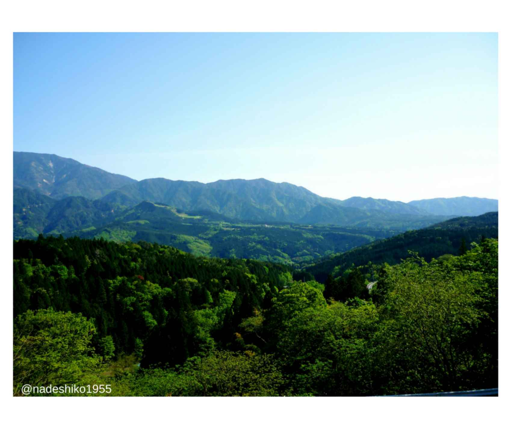
Rule number one is,
don't sweat the small stuff.
Rule number two is,
it's all small stuff."
Robert Eliot
ルール１
小さなことでくよくよするな。
ルール２
しょせん、すべてはみんな小さなことである。
ロバート・エリオット
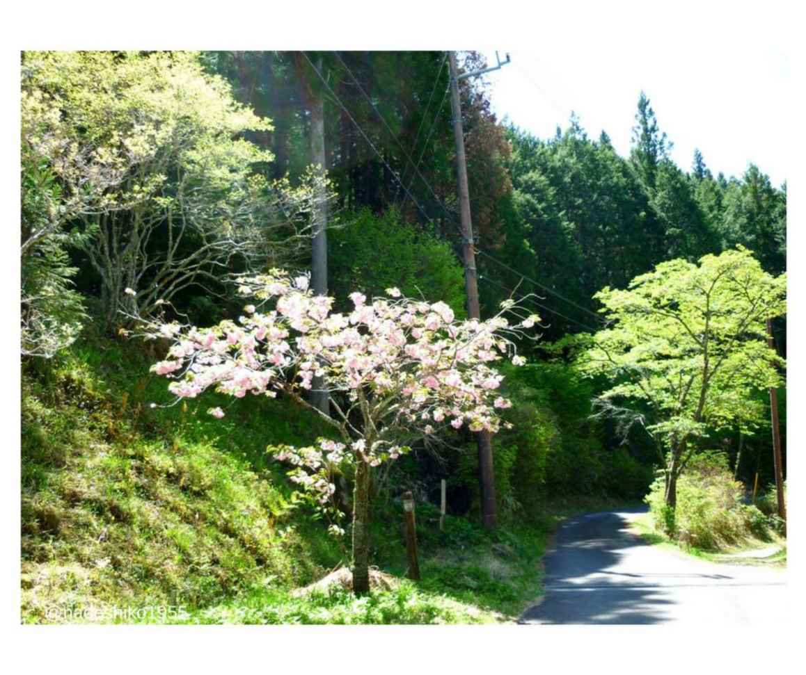
When I was most beautiful,
Cities were falling
And from unexpected places
Blue sky was seen.
When I was most beautiful,
People around me were killed.
And for paint and powder
I lost the chance.
When I was most beautiful,
Nobody gave me kind gifts,
Men knew only how to salute
And went away.
When I was most beautiful,
My country lost the war.
I paraded the main street
With my blouse sleeves rolled high!
When I was most beautiful,
I was most unhappy,
I was quite absurd,
I was quite lonely.
Noriko Ibaraki "When I was most beautiful"
わたしが一番きれいだったとき
街々はがらがらと崩れていって
とんでもないところから
青空なんかが見えたりした
わたしが一番きれいだったとき
まわりの人達が沢山死んだ
工場で 海で 名もない島で
わたしはおしゃれのきっかけを落としてしまった
わたしが一番きれいだったとき
誰もやさしい贈り物を捧げてはくれなかった
男たちは挙手の礼しか知らなくて
きれいな眼差だけを残し皆（みな）発っていった
わたしが一番きれいだったとき
わたしの国は戦争で負けた
そんな馬鹿なことってあるものか
ブラウスの腕をまくり卑屈な町をのし歩いた
わたしが一番きれいだったとき
わたしはとてもふしあわせ
わたしはとてもとんちんかん
わたしはめっぽうさびしかった
茨木のり子 「私が一番きれいだったとき」
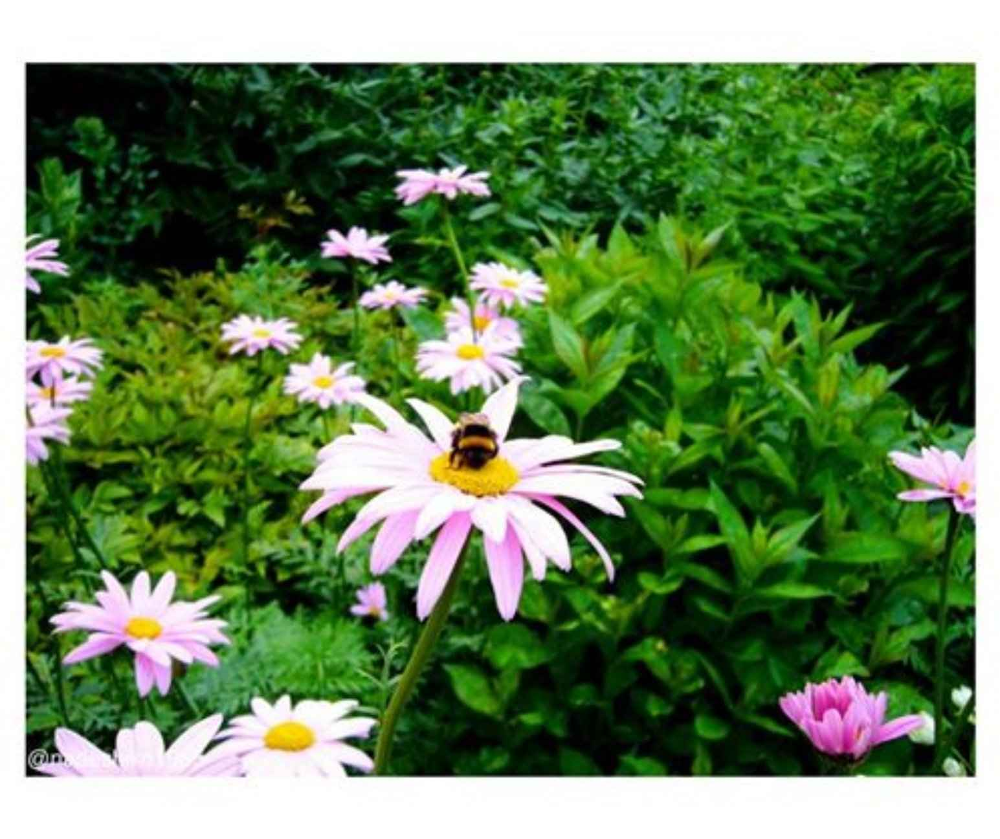
Life is full of
beauty.
Notice it.
Notice the bumble bee,
the small child, and the smiling faces.
Smell the rain, and feel the wind.
Live your life to the fullest potential,
and fight for your dreams.
Ashley Smith
人生は美しさに満ちています。
気づいてください。
マルハナバチに、小さな子供に
そして笑顔に気づいてください。
雨のにおいをかぎ、風を感じてください。
あなたの人生を最大限に生きて下さい。
そして夢のために戦ってください。
アシュリー・スミス
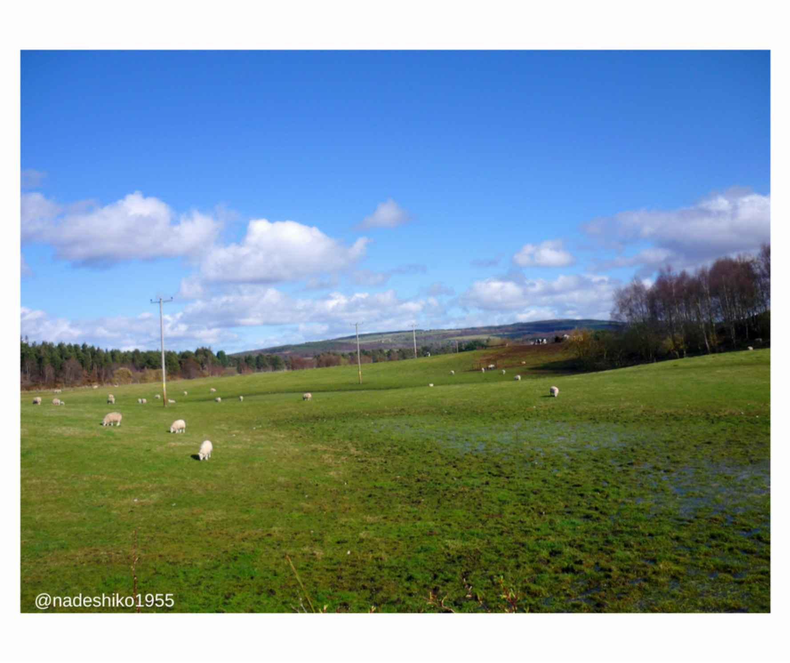
Don't waste your time
in anger, regrets, worries, and grudges.
Life is too short to be unhappy."
Roy T. Bennett
あなたの時間を怒りや後悔や心配や憎しみで無駄にしないで。
人生は不幸でいるには短すぎる。
ロイ・Ｔ．ベネット
The journey of a thousand miles
begins with one step.
Lao Tzu
何千マイルもの旅は
一歩から始まる。
老子
I like nonsense;
it wakes up the brain cells.
Dr. Seuss
私はナンセンスが好きだ。
それは私の頭脳の細胞を目覚めさせる。
ドクター・スース
It's not what happens to you,
but how you react to it that matters.
Epictetus
問題なのは
何があなた起こるかでなく
それにどう対応するかである。
エピクテトス

If you want to live,
stop asking permission
do it now and regret later.
What other people think is none of your business
Paulo Coelho
もしあなたが生きたいなら、
許可を求めるのをやめなさい。
今すぐやって後悔は後でしなさい。
他の人たちが思うことはあなたの知ったことではない。
パウロ・コエーリョ
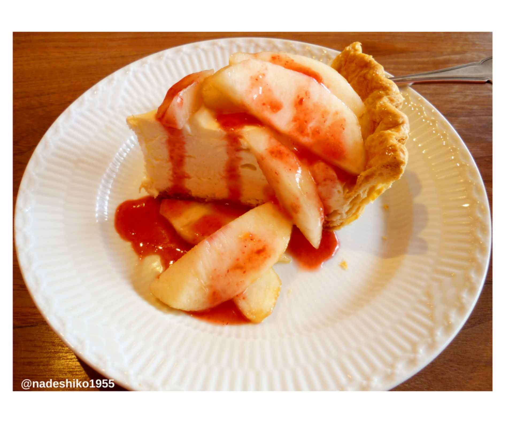
Life is uncertain.
Eat dessert first."
-Ernestine Ulmer
人生とは当てにならないものだ。
だからデザートから先に食べよう。
アーネスト・ウルマー
」
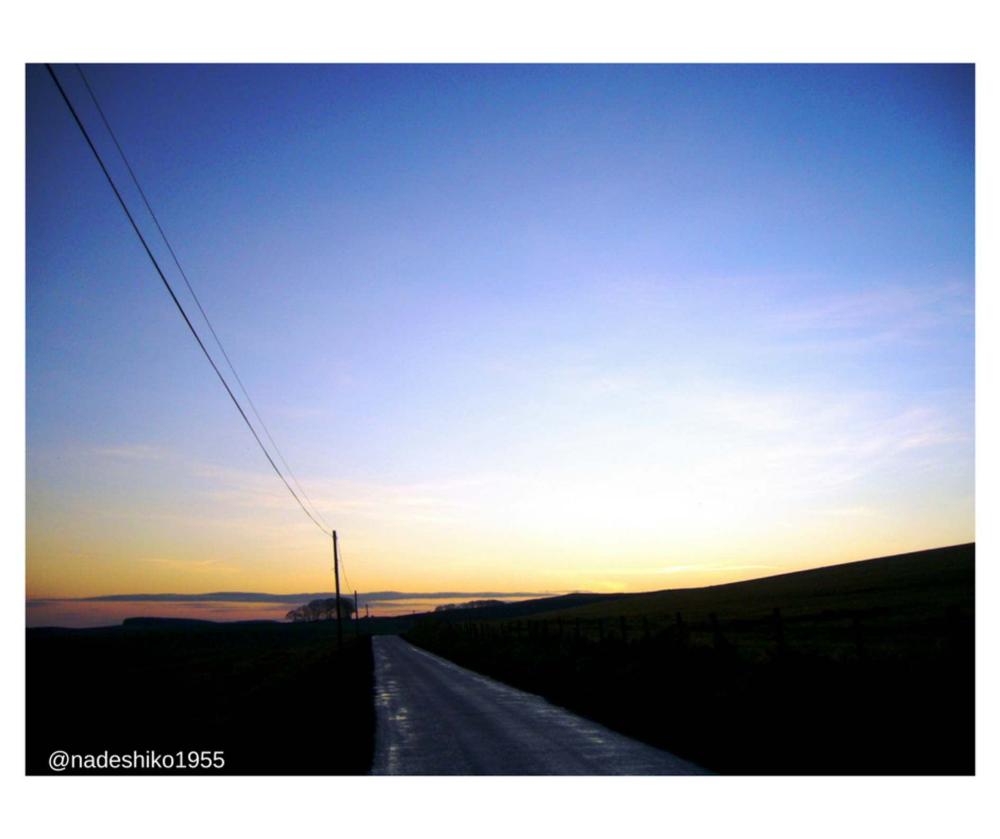
If you want to fly in the sky,
you need to leave the earth.
If you want to move forward,
you need to let go the past that drags you down.
Amit Ray
もしあなたが空に飛び立ちたいなら
あなたは地面を離れる必要がある。
あなたが前進したいなら、
あなたはあなたを引きずりおろす過去を手放す必要がある。
アーミット・レイ
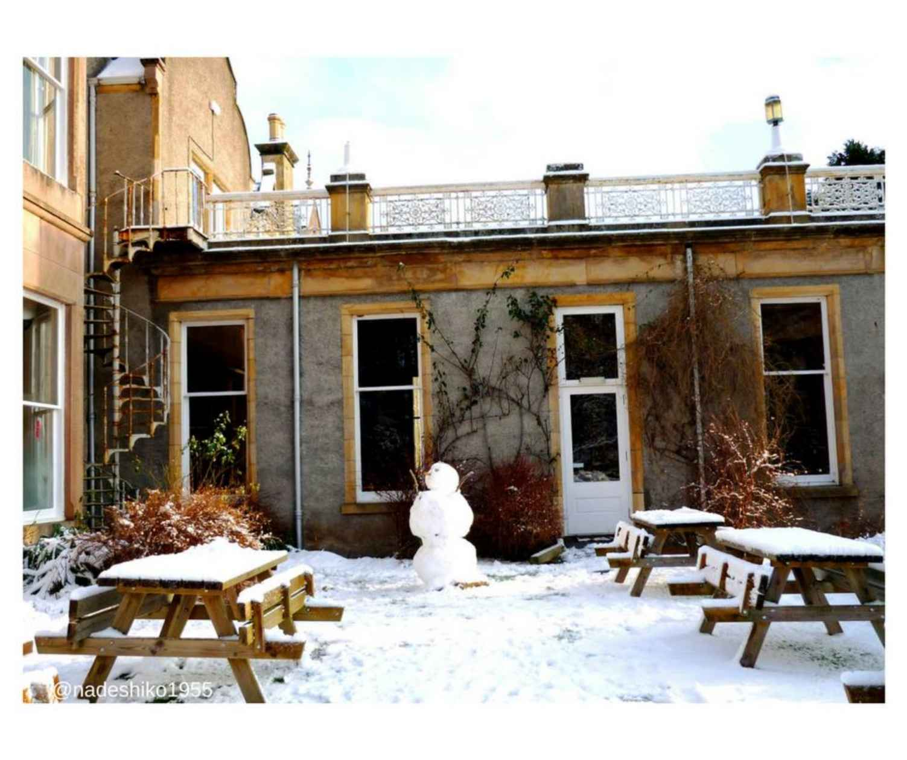
It's time to say goodbye,
but I think goodbyes are sad
and I'd much rather say hello.
Hello to a new adventure.
Ernie Harwell
さよならを言うときが来た。
でもさよならは悲しい。
そして私はむしろこんにちはと言う方がいい。
こんにちは、新しい冒険よ。
アーニー・ハーウェル
All great achievements require time.
Maya Angelou
全ての偉業には時間がかかる。
マヤ・アンジェロウ
Slow down.
You're too important.
Life teaches you how to live it,
if you live long enough.
Tonny Bennet
ゆっくり生きなさい。
あなたはとっても大切な人なのだ。
人生があなたにどう生きるかを教えてくれる
もしあなたが十分長く生きていれば。
トニー・ ベネット
Never give up.
Expect only the best from life
and take action to get it.
Catherine Pulsifer
決してあきらめないで。
人生に最善を期待して
それを得るための行動を起こしなさい。
キャサリン・パルシファー
Health is not valued
till sickness comes.
Thomas Fuller
健康は
病気になって初めてありがたさがわかる。
トーマス・フラー
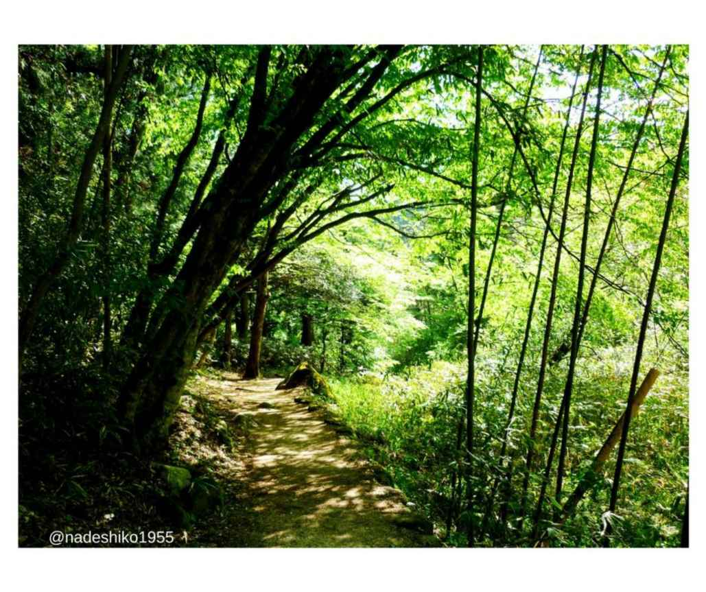
Don't ask yourself what the world needs,
ask yourself what makes you come alive.
And then go and do that.
Because what the world needs is
people who have come alive.
Howard Washington Thurman
世界が何を必要としているのか、
自分に問いかけてはいけない。
あなたを生き生きとさせてくれるものは何か、
と自分に問いかけなさい。
そして出かけてそれをしなさい。
なぜなら世界が必要としているのは
生き生きしている人々だからだ。
ハワード・ワシントン・サーマン
Once we surrender our mind to GOD completely,
HE will take care of us in every way." -
Sri Sathya Sai Baba
いったん神に完全にお任せすれば
神は私たちをすべてにおいて面倒を見てくださるだろう。
スリ・サティア・サイババ
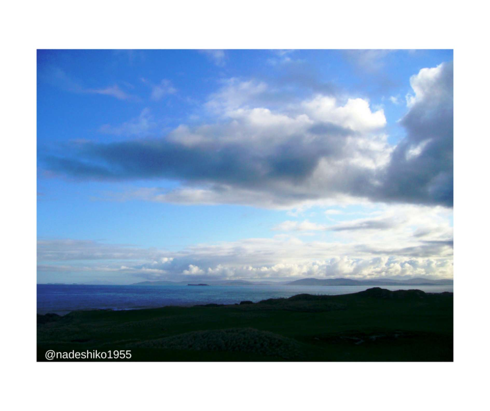
Looking at beauty in the world,
is the first step of purifying the mind."
Amit Ray,
世界の中の美を見ることが
心を浄化する最初のステップだ。
アミット・レイ
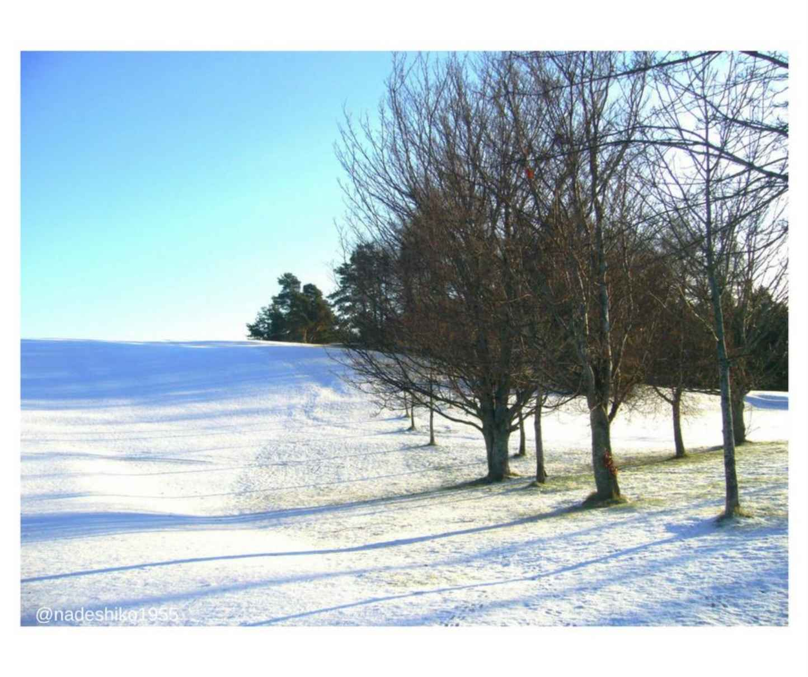
Smile,
it's free therapy.
Douglas Horton
微笑みなさい。
それは無料のセラピーだ。
ダグラス・ホールトン
There is no road in front of me,
I can create a path behind me
Kotaro Takamur a "Journey"
僕の前に道はない。
僕の後ろに道はできる。
高村幸太郎 「道程」
The sun is gone,
but I have a light.
Kurt Cobain
太陽は行ってしまった。
でも私には灯りがある。
カート・コバーン
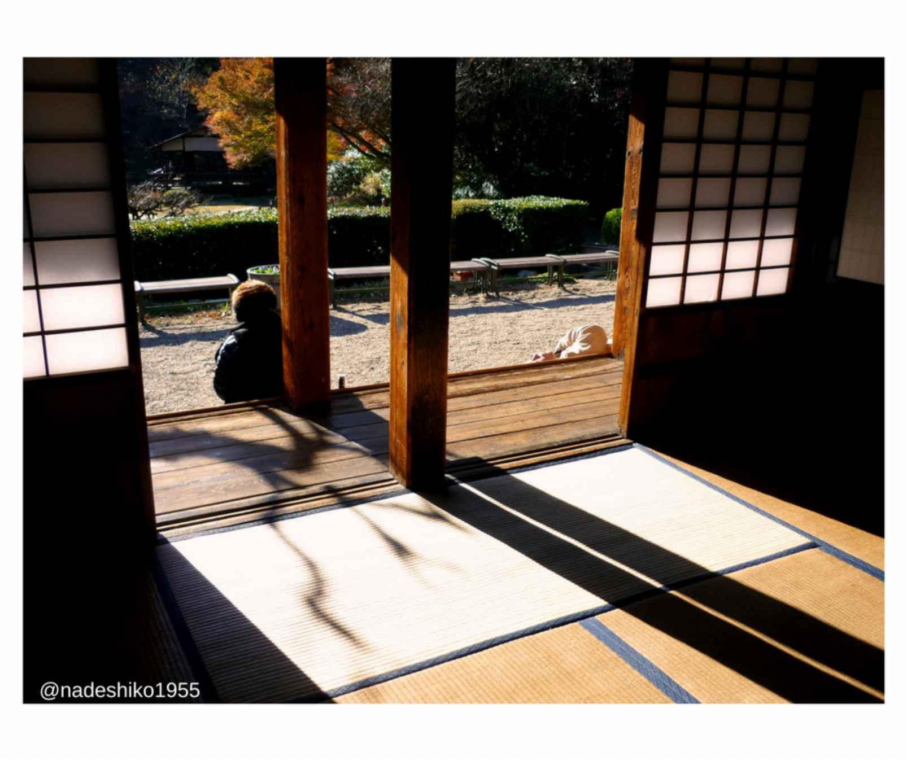
I seldom end up where I wanted to go,
but almost always end up where I need to be.
Douglas Adams
私は自分が行きたかったところにほぼ行けなかったが
でも結局はいつも私がいるべきところにたどり着いている。
ダグラス・アダムズ
Sleep is the best meditation.
Dalai Lama
睡眠は最高の瞑想である。
ダライ・ラマ
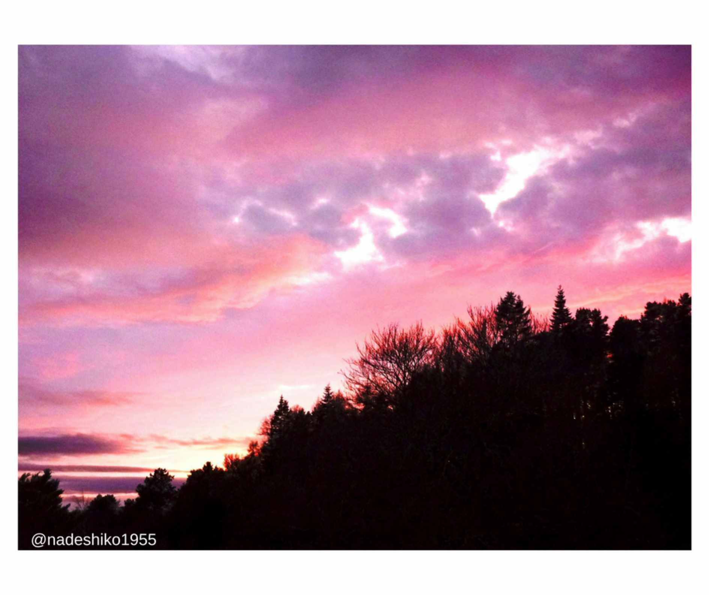
Every experience is a success.
Louise L. Hay
全ての経験は成功だ。
ルイーズ・ヘイ
I don't like to commit myself about heaven and hell
you see, I have friends in both places.
Mark Twain
天国に行きたいのか、
地獄に行きたいのか、
決められないんだ。
知ってのとおり
両方に友がいるんでね。
マーク・トウェイン
Don't worry about losing.
If it is right, it happens -
The Main thing is not to hurry.
Nothing good gets away.
John Steinbeck
失うことを恐れてはいけない。
もしそれが正しいことなら、それは起こる。
大切なことは急がないことだ。
良いことは決してなくなったりしない。
ジョン・スタインベック
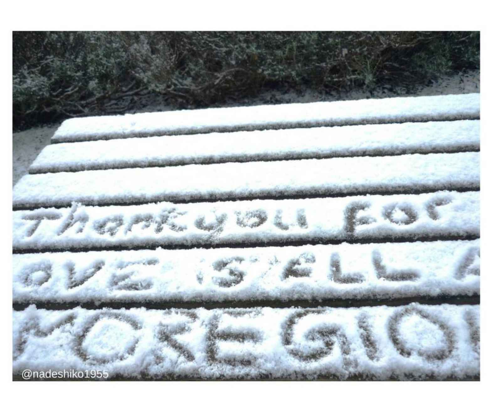
Gratitude makes sense of our past,
brings peace for today,
and creates a vision for tomorrow.
Melody Beattie
感謝は過去に意味を与え、
現在に平和をもたらし
そして未来へのヴィジョンを創造する。
メロディ・ビーティ
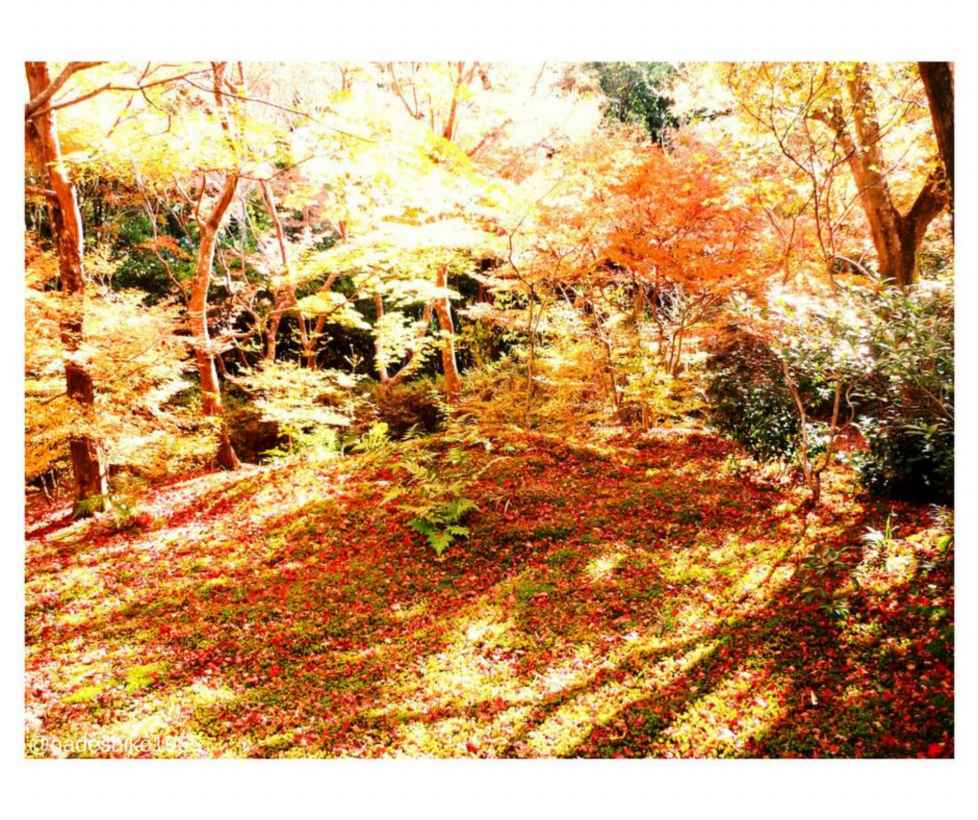
When we have sunshine,
the world looks different.
Motoe Yamamoto
太陽が照ると
世界は違って見える。
山本元恵
To have another language is
to possess a second soul.
Charlemagne
もう一つの言語を持つことは
２番目の魂を持つことだ。
カール大帝
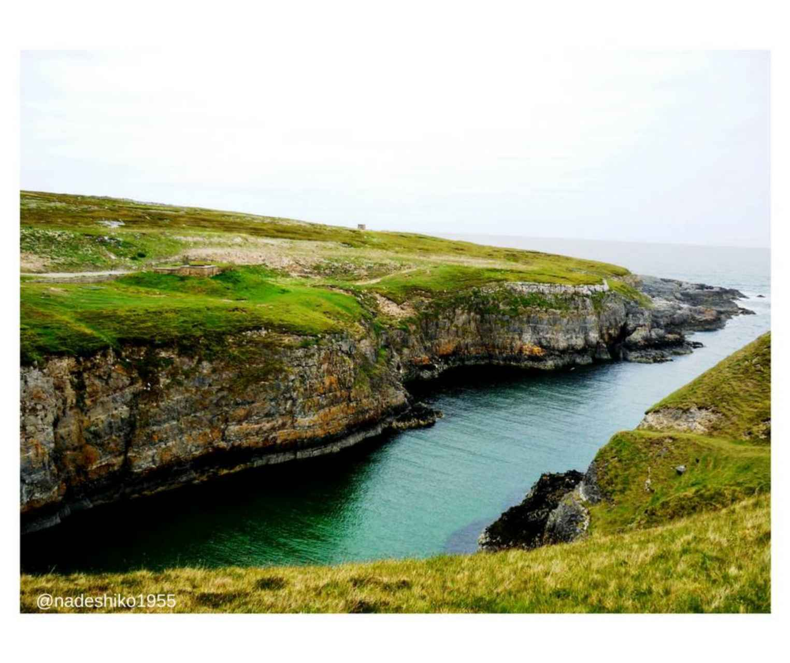
In the process of letting go,
you will lose many things from the past,
but you will find yourself.
Deepak Chopra
手放す過程のなかで
あなたは過去のたくさんのものを失うだろう。
でもあなたは自分自身を見つけるだろう。
ディーバック・チョプラ
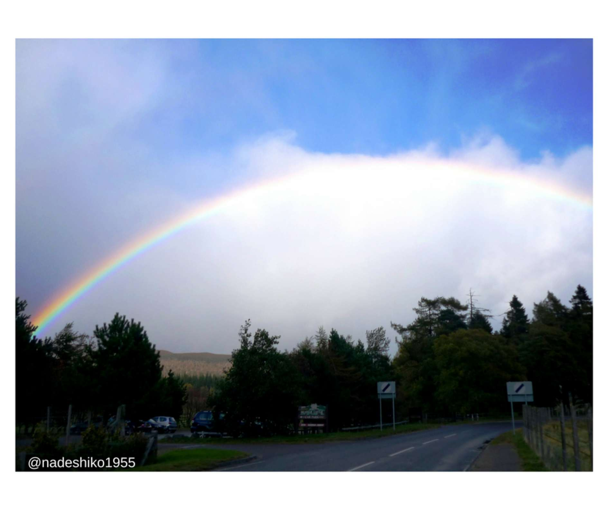
You'll never find a rainbow
if you're looking down.
Charlie Chaplin
あなたは決して虹を見つけることはないだろう。
もし下を見ていたら。
チャーリー・チャップリン
One song can spark a moment,
One flower can wake the dream,
One tree can start a forest,
One bird can herald spring
One smile begins a friendship,
One hand clasp lifts a soul,
One star can guide a ship at sea
One word can frame the goal.
Unknown
ひとつの歌が一瞬を輝かせる
ひとつの花が夢を目覚めさせる
ひとつの木から森が始まる
一羽の鳥が春の先触れをする
ひとつの微笑みが友情を始める
ひとつの拍手が魂を高揚させる
ひとつの星が海で船を導く
ひとつの言葉がゴールを作る
詠み人知らず
Maybe it's true,
maybe we don't know
what we have
until we've lost it.
but, maybe it's also true
that we don't know
what we're missing
until we find it"
~ Winnie the Pooh
多分それは本当だ。
多分私たちは知らない。
自分が何を持っているか。
それを失ってしまうまでは。
でも、多分これも本当だ。
私たちは知らない。
何が欠けているのか
それを見つけるまでは。
クマのプーさん
Walk on,
walk on with hope in your heart,
and you'll never walk alone,
you'll never walk alone.
Oscar Hammerstein II
歩き続けなさい。
心に希望を持って。
そうすればあなたは一人で歩くことはない。
あなたは決して一人では歩くことはない。
オスカー・ハマースタイ ン2 世
Transformation is a process,
and as life happens there are tons of ups and downs.
It's a journey of discovery -
there are moments on mountaintops
and moments in deep valleys of despair.
Rick Warren
変容というのはプロセスだ。
生きていくうちにはたくさんの浮き沈みがある。
それは発見の旅である。
山の頂上での瞬間と
深い絶望の谷の瞬間の。
リック・ウオレン
Somewhere,
something incredible is waiting to be known.
Sharon Begley
どこかに
素晴らしい何かが
知られるのを待っている。
シャロン・ビグレイ

One of the best pieces of advice I ever got was
from a horse master.
He told me to go slow to go fast.
I think that applies to everything in life.
We live as though there aren't enough hours in the day
but if we do each thing calmly and carefully
we will get it done quicker and with much less stress.
Viggo Mortensen
私が今までに受けた最高のアドバイスの一つが
馬の専門家からのものだった。
彼は早く行ためには遅く行くようにと言った。
これは人生のすべてに適用できると思う。
私たちは十分な時間がないかのように生きている。
しかしもし私たちがひとつひとつのことを心静かに注意深く行えば
ずっと早くずっと少ないストレスでそれができるだろう。
ヴァーゴ・、モーテンセン
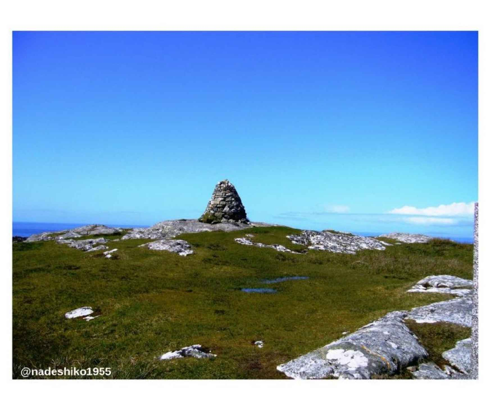
Give your stress wings
and let it fly away.
Terri Guillemets
あなたのストレスに翼を与えて
飛び去らせなさい。
テリー・ギルメッツ
There is no certainty;
there is only adventure.
Roberto Assagioli
確かなものはない。
冒険があるだけだ。
ロベルト・アサジオリ
In order to succeed,
we must first believe that we can.
Nikos Kazantzakis
成功するためには
まず成功できると信じなくてはならない。
ニコス・カザンザキス
The best remedy for a short temper
is a long walk.
Joseph Joubert
短気への最高の薬は
長い散歩である。
ジョゼフ・ジュベア

Be still.
it takes no effort to be still;
it is utterly simple.
When your mind is still, you have no name,
you have no past, you have no relationships,
you have no country, you have no spiritual attainment,
you have no lack of spiritual attainment.
There is just the presence of beingness with itself.
Gangaji
静かでいなさい。
静かになるには努力はいりません。
まったく簡単なことです。
あなたの心が静かな時、
あなたは名前も過去も人間関係も
国もありません。
霊的に達成することも
霊的に達成できなかったことも
ありません。
ただそこには存在そのものがあるだけです。
ガンガジ
Sometimes the best step
is to take no step at all.
And embrace the moment
exactly as it is.
There are no steps to Now.
Jeff Foster
時には最善の一歩というのは
まったく歩き出さないことであったりする。
その一瞬をありのままに抱きしめるのだ。
今に至る一歩はないのだ。
ジェフ・フォスター
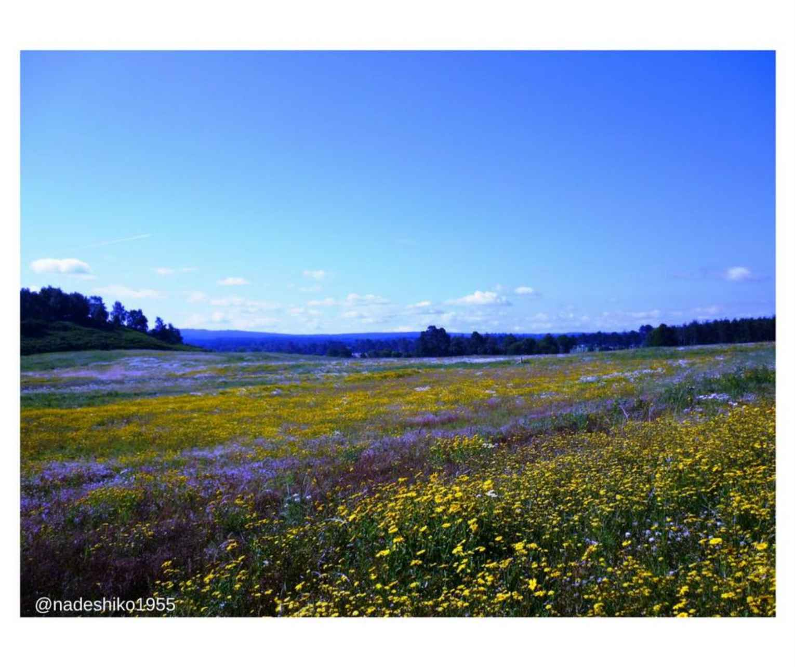
Just living is not enough
... one must have sunshine,
freedom,
and a little flower.
Hans Christian Andersen
ただ生きているだけでは十分でない。
人は太陽と
自由と
そして少しの花が必要だ。
ハンス・クリスチャン・アンデルセン
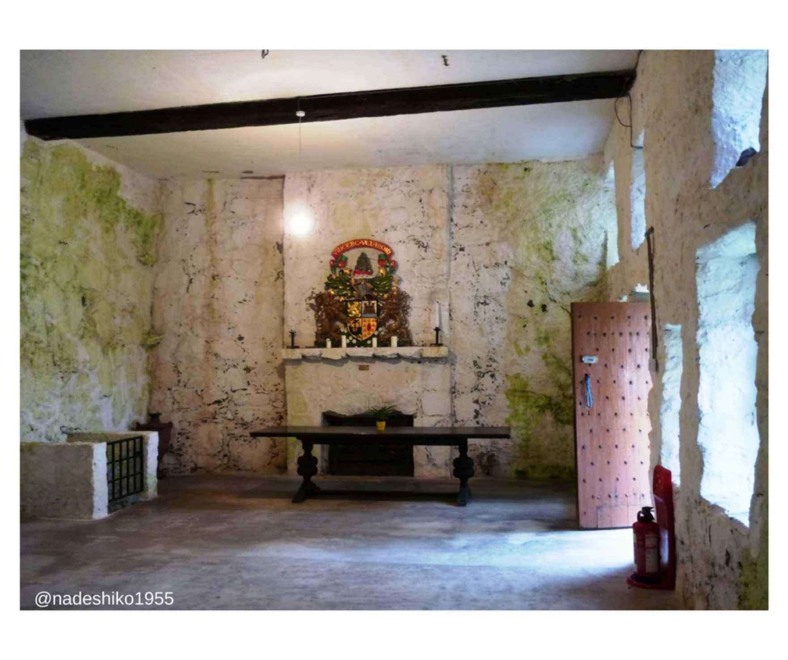
I believe that everything happens for a reason.
People change so that you can learn to let go,
things go wrong so that you appreciate them when they're right,
you believe lies so you eventually learn to trust no one but yourself, and sometimes good things fall apart
so better things can fall together."
Marilyn Monroe
起こることには、
すべて理由があると信じてる。
人は変わってしまうから
手放すことを学ぶことができる。
うまくいかないことから、
うまくいくことに感謝できる。
嘘を信じたことから、
自分以外信じられないということを学ぶ。
そしてときには
いいことが粉々になって、
もっといいことがやってくるのよ。
マリリン・モンロー
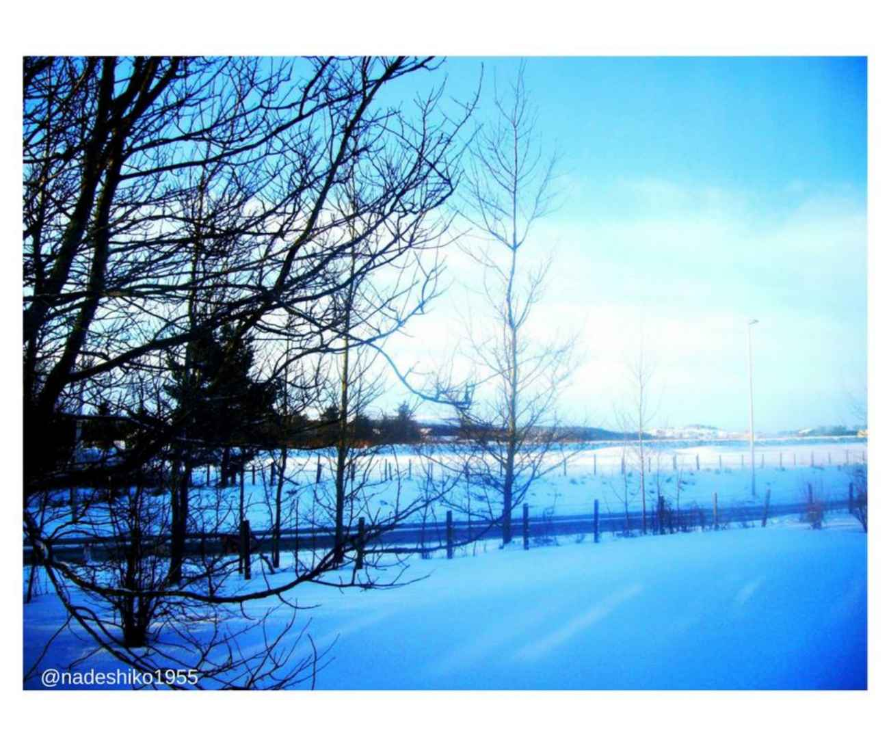
Never blame anyone in your life.
Good people bring you happiness,
bad people bring you experience."
Unknown
あなたの人生で誰も責めてはいけない。
良い人々はあなたに幸せをもたらし、
悪い人々はあなたに経験をもたらす。
詠み人知らず

Stop being a prisoner of your past.
Become the architect of your future."
-- Robin Sharma
過去の囚人であるのをやめなさい。
未来の建築家になりなさい。
ロビン・シャーマ
Let us remember
One book, one pen, one child,
and one teacher can change
the world.
Malala Yousafzai
覚えておきましょう。
一冊の本、一本のペン、一人の子供
そして一人の教師が
世界を変えることができるのです。
マララ・ユスフザイ
You can't reach for anything new
if your hands are still full of yesterday's junk.
Louise Smith
あなたは何も新しいことに到達できない。
もしあなたの手が過去のガラクタでいっぱいなら。
ルイーズ・スミス
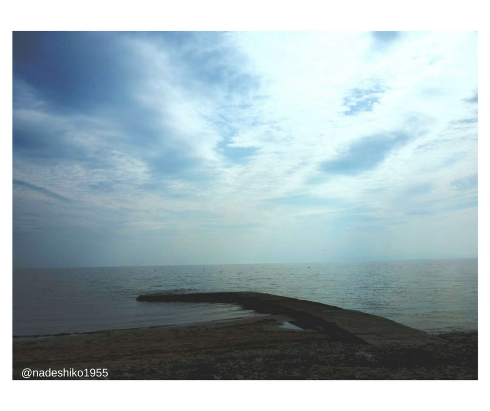
If you are lonely when you're alone,
you are in bad company.
Jean-Paul Sartre
もしあなたがひとりの時に孤独なら
あなたは悪い仲間と一緒なのだ。
ジャン・ポール・サルトル
The time to relax is
when you don't have time for it.
Jim Goodwin
リラックスするべき時とは
あなたがそのための時間がないときだ。
ジム・グッドウィン
Love
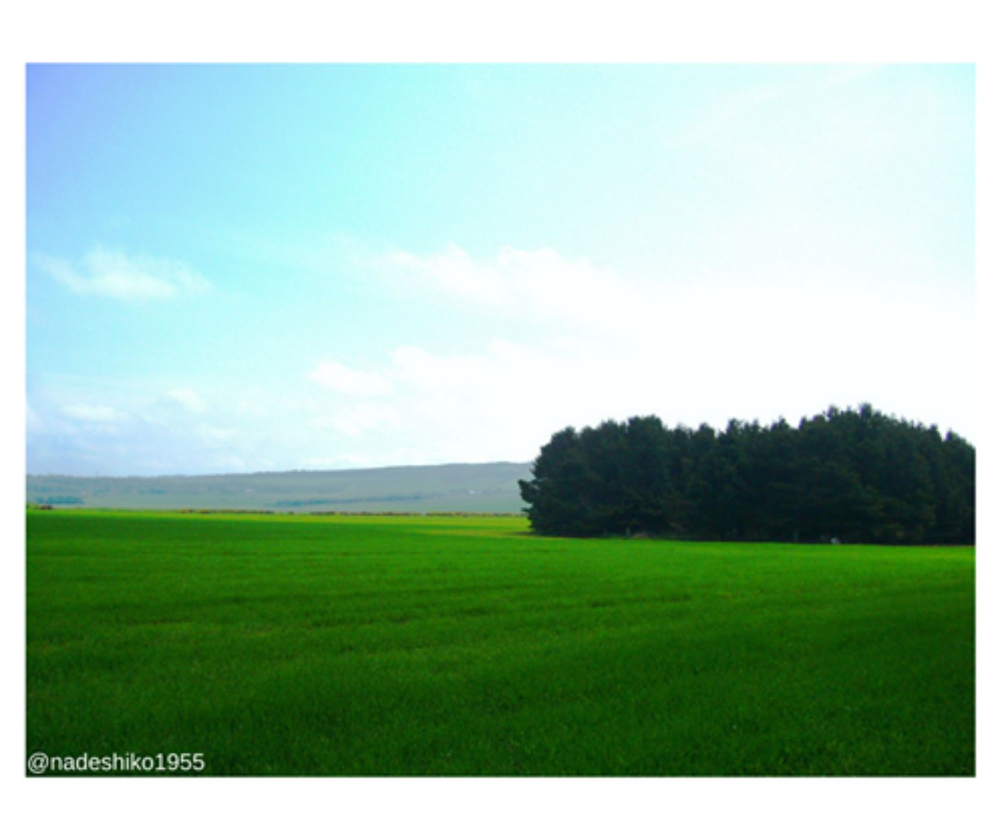
You don't love someone
for their looks,
or their clothes,
or for their fancy car,
but because they sing a song only you can hear.
Oscar Wilde
あなたは誰かを
その人のルックスや
着ているものや
かっこいい車のせいで
愛するわけではない。
彼らがあなただけに聞こえる歌を歌うからである。
オスカー・ワイルド
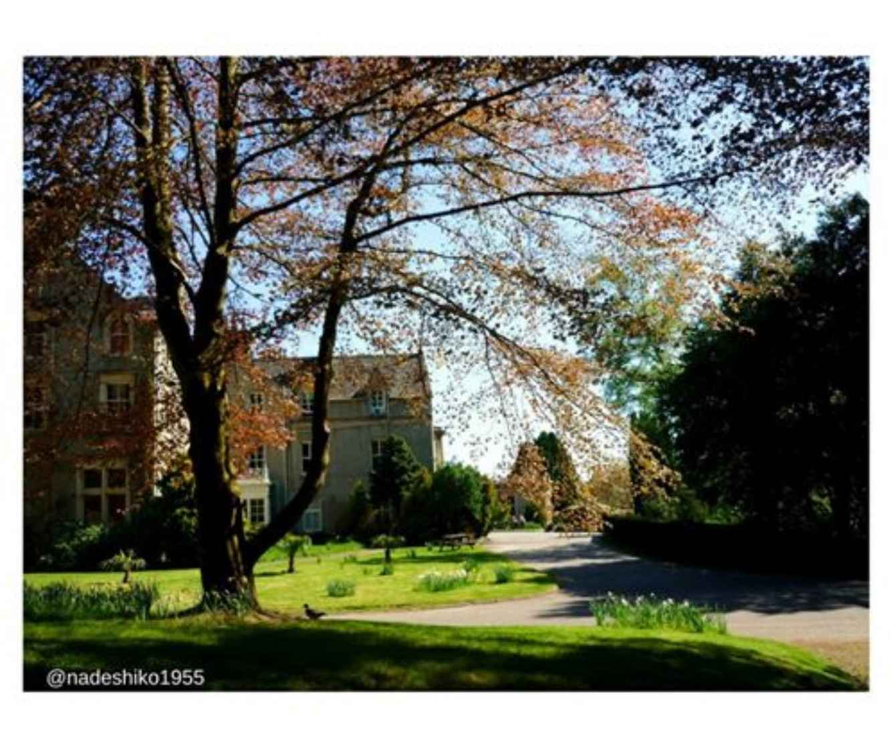
How beautiful it is to find
someone who asks nothing
but your company.
Brigitte Nicole
あなたと一緒にいること以外
ほかに何も求めない人を見つけるのは
なんと素晴らしいことだろうか？
ブリジット・ニコル
The most important thing in life is
to learn how to give out love,
and let it come in
Morrie Schwartz.
人生で一番大切なことは
どうやって愛を与えるか
そしてどうやって愛を受け入れるかを学ぶことだ。
モ
リ―
・シュワルツ
A soulmate's purpose is
to shake you up,
tear apart your ego a little bit,
show you your obstacles and addictions,
break your heart open so new light can get in,
make you so desperate
and out of control that you have to transform your life,
then introduce you to your spiritual master ...
― Elizabeth Gilbert, Eat, Pray, Love
ソウルメイトの目的と言うのは、
あなたを揺り動かして
あなたのエゴを引き裂き、
あなたの障害や中毒を見せて
あなたのハートを破って
新しい光が入ってこられるようにし
あなたを絶望的にコントロール不可にして
あなたの人生を変容させる
そしてあなたにスピリチュアルな師を紹介することである。
エリザベス・ギルバート 「食べて、祈って、恋をして」
Dad, wherever you are,
you are gone
but you will never be forgotten.
Conrad Hall
パパ、あなたがどこにいようと、
あなたは行ってしまったんだよね。
でも決して忘れられることはないよ。
コンラッド・ホール
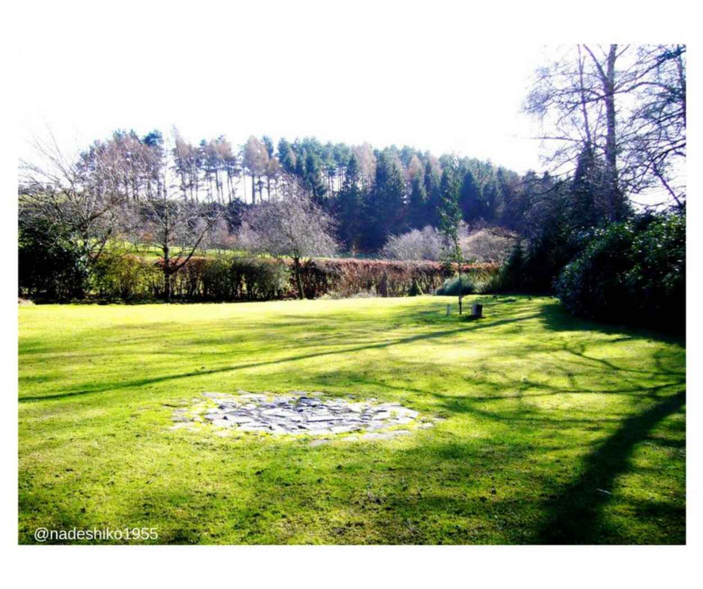
Some people won't love you,
no matter what you do.
Some people won't STOP loving you,
no matter what you do.
Go where the love is.
Eleanor Brownn
ある人たちはあなたを愛さない。
あなたが何をしようとも。
ある人たちはあなたを愛さずにはいられない。
あなたが何をしようとも。
愛のあるところに行きなさい。
エレノア・ブラウン
I
think being in love with life is
a key to eternal youth.
Doug Hutchison
私は人生と恋に落ちるのが
永遠の若さへの鍵だと思う。
ダグ・ハッチ
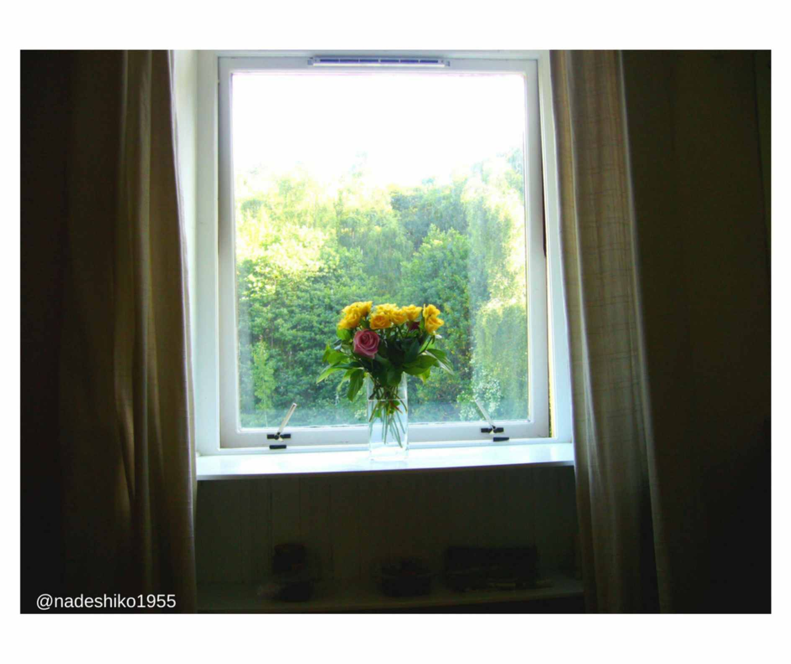
And remember,
as it was written,
to love another person is to see the face of God."
Les Miserables
覚えておきなさい。
書かれているように
一人の人を愛することは神の顔を見ることなのです。
レ・ミゼラブル
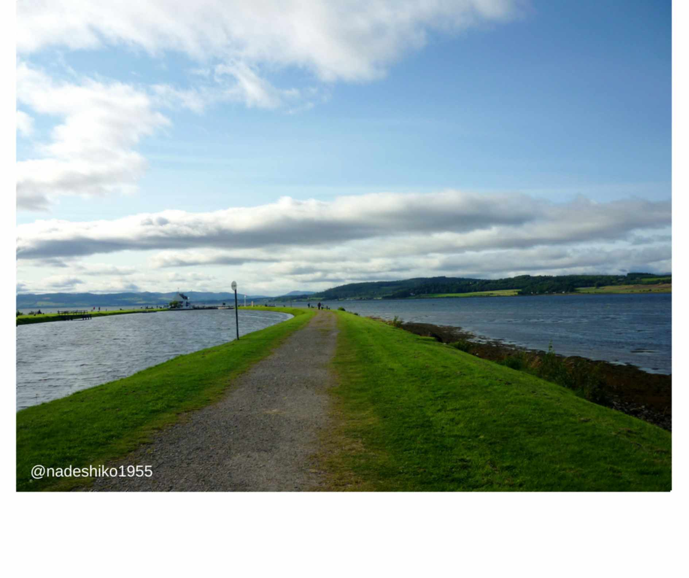
Eventually,
you will come to understand that love heals everything,
and love is all there is.
Gary Zukav
いずれ
あなたは理解するようになるだろう。
愛がすべてを癒し
そして愛はどこにでもあるということを。
ゲイリー・ズーカフ
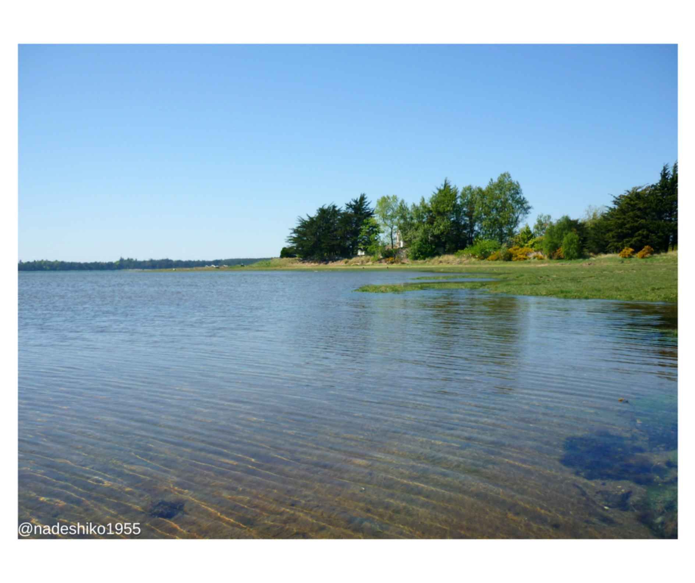
When you love yourself,
it's easier to love the world.
When you love the world,
more love comes your way.
-- Jeff Moore
あなたが自分自身を愛するとき
世界を愛することがもっと簡単になる。
あなたが世界を愛するとき
もっとたくさんの愛があなたのもとにやってくる。
ジェフ・ムーア
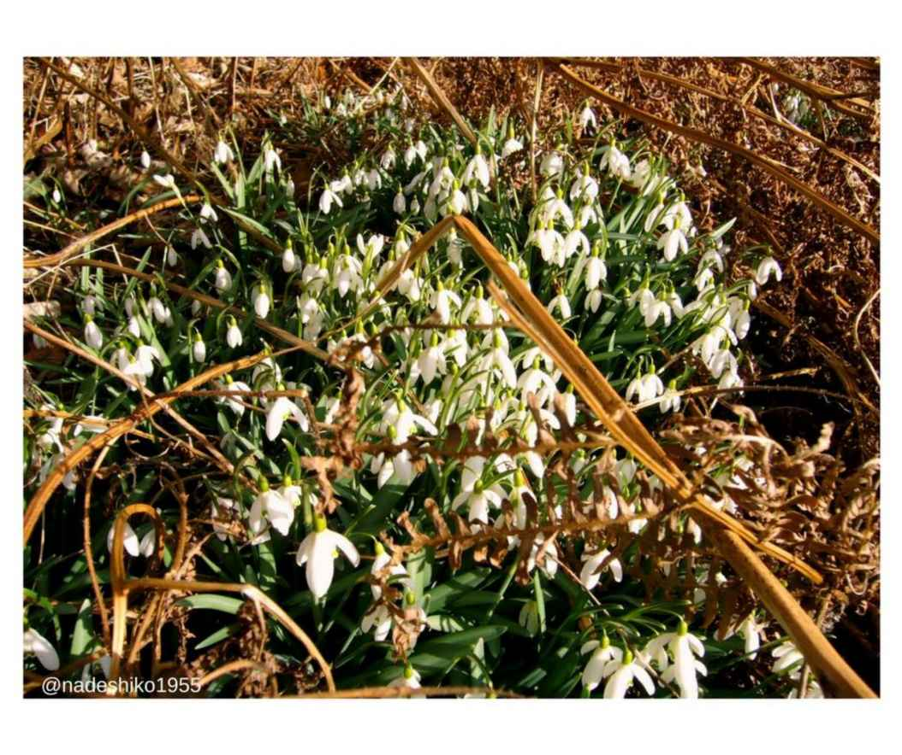
Love forgives all things.
You don't even need to ask.
Lisa Kleypas "Love in the afternoon"
愛はすべてを許します。
だからあなたは許しを請う必要はないのです。
リサ・クレイパス 「優しい午後に口づけて」
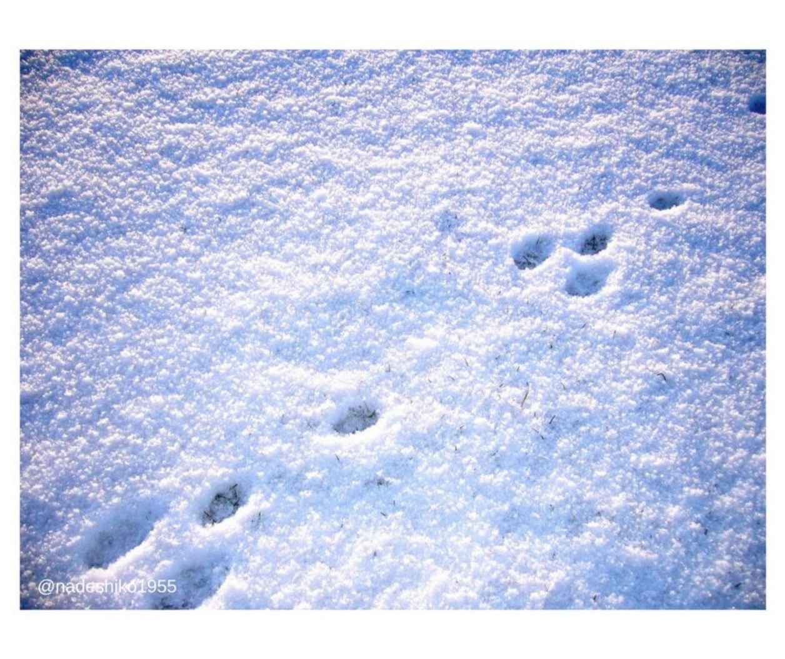
The footprints of an Angel in your life
are Love.
Genevieve
あなたの人生における
天使の足跡は
愛である。
サン・ジュヌビエーブ
The regret of my life is
that I have not said 'I love you'
often enough.
Yoko Ono
私の人生における後悔は
「愛してる」と十分に言わなかったことだ。
オノ・ヨーコ
Accept yourself,
love yourself,
and keep moving forward."
Roy Bennett
自分を受け入れなさい。
自分を愛しなさい。
そして進み続けなさい。
ロイ・ベネット
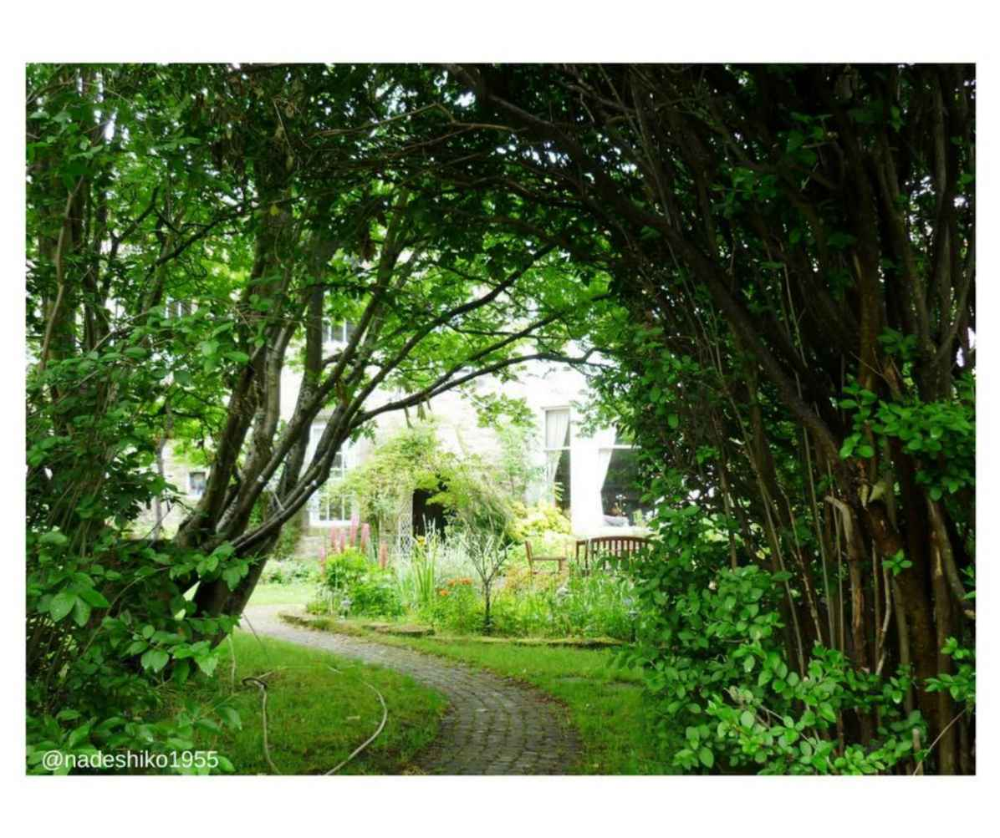
Love is an irresistible desire
to be irresistibly desired.
Robert Frost
愛とは抑えきれないほど求められたいという
抑えきれない欲望である。
ロバート・フロスト
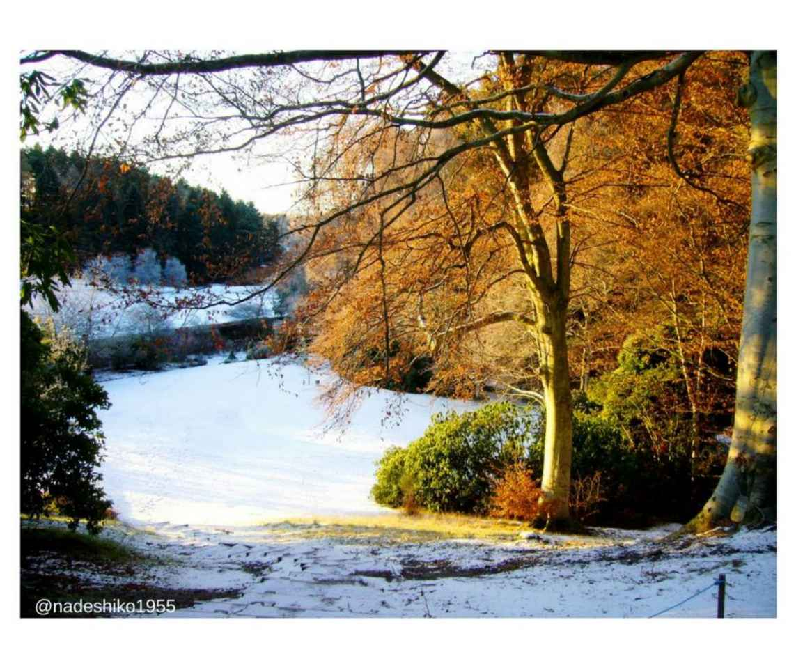
Love the life you live,
and live the life you love.
-Bob Marley
あなたの生きている人生を愛しなさい。
そしてあなたの愛している人生を生きなさい。
ボブ・マーリー
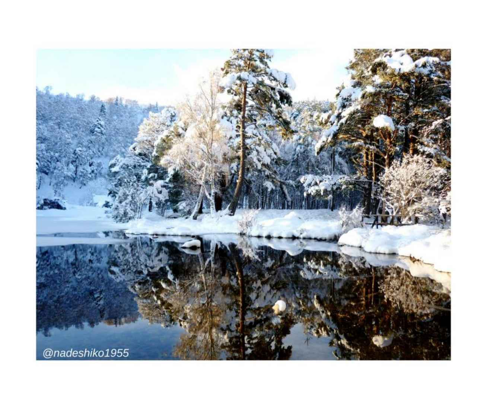
All you need is love.
-John Lennon
あなたに必要なものは
愛である。
ジョン・レノン
You will find that it is necessary to let things go;
simply for the reason that they are heavy.
So let them go, let go of them.
I tie no weights to my ankles."
― C. JoyBell C.
あなたは物事を手放すことが必要だとわかるでしょう。
それは単に重いからなのよ。
だから彼らを行かせなさい。手放しなさい。
私は自分の足首には重りをつけたりしない。
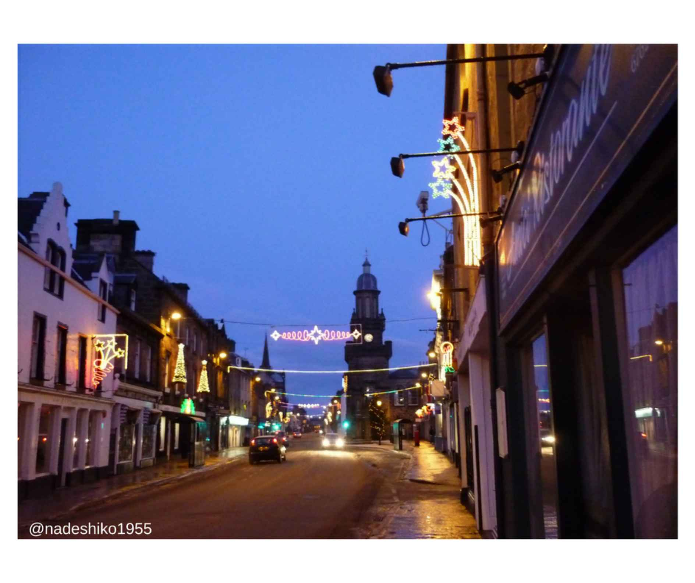
Baby I miss you
Most at Christmas time
And I can't get you
Get you off my mind
Every other season comes along
And I'm all right
But then I miss you
Most at Christmas time
"MIss you the most " Mariah Carey
あなたが恋しいの。
特にクリスマスには。
そして私はあなたを心から追い出せない。
他の季節がきても
大丈夫なのに
クリスマスになると
あなたが恋しいの。
マライア・キャリー
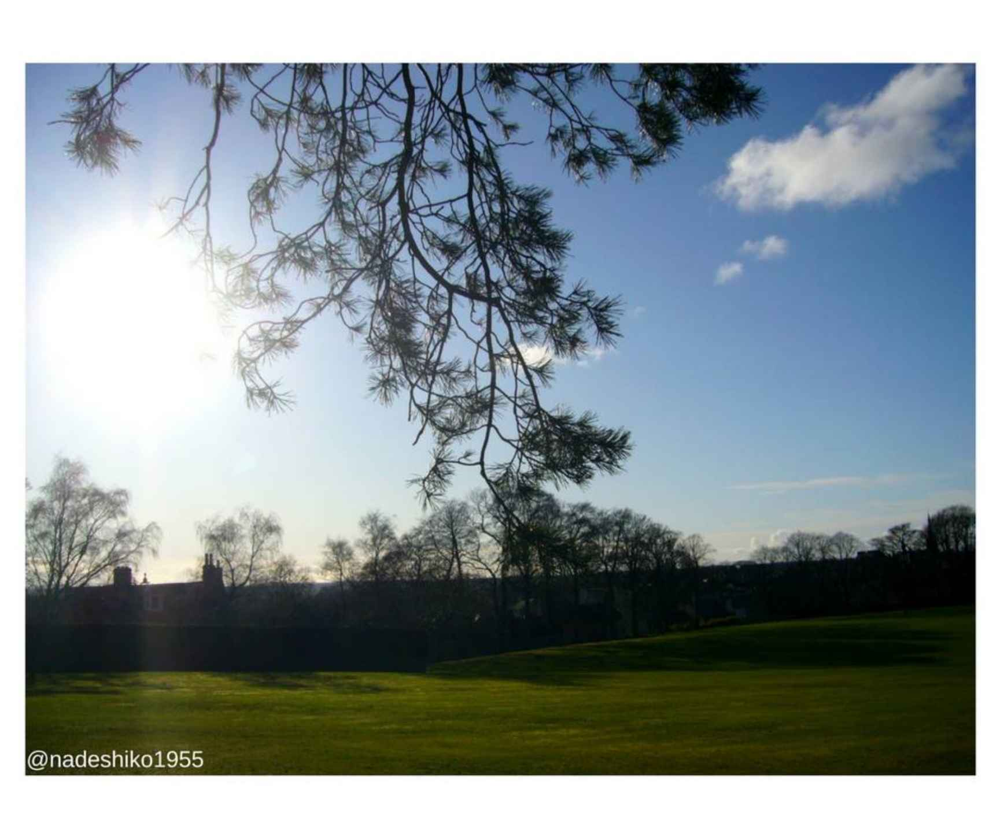
Love is like war:
easy to begin
but very hard to stop."
H. L. Mencken
愛とは戦争のようなものだ。
始めるのはたやすいが
終わらせるのはとても難しい。
Ｈ .L. メンケン
Before you find your soul mate,
you must first discover your soul.
Charles F. Glassman
ソウルメイトを見つける前に
あなたは自分の魂をまず発見しなければならない。
チャールズ・グラスマン
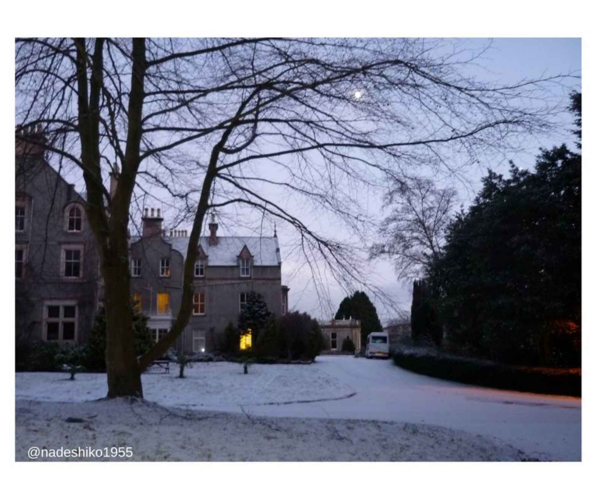
Don't grieve.
Anything you lose comes round
in another form.
Rumi
悲しまないで。
あなたが失うものはなんでも
違う形で戻ってくる。
ルミ
When you want only love
you will see nothing else.
A Course in Miracle
あなたが愛だけを求めるなら
他には何も見ないだろう。
奇跡のコース
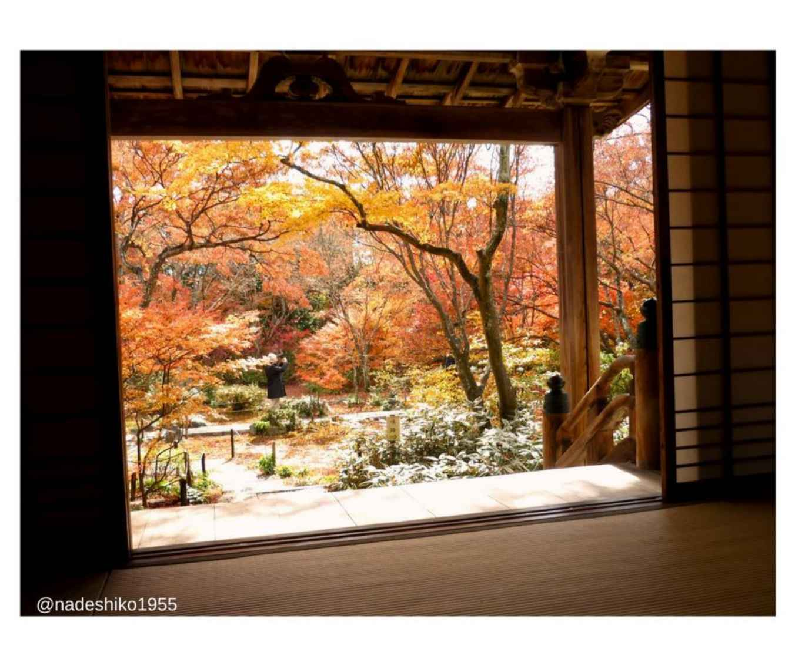
I just want you to be happy
I might not be the one to make you though
It hurts so much to see you down
I just want you to feel better
You never tell me what the pain is for
You let your heart be stuck in the fall
You don't have to share
Just come out of a cage
Then the sun will banish your fears
Bonnie Pink "I just want you to be happy"
私はただあなたに幸せでいてほしいの。
私はあなたを幸せにする人ではないかもしれないけど
でも落ち込んでるあなたを見るのはとってもつらい。
私はただあなたに幸せでいてほしいの。
あなたはどうして苦しんでいるのか言ってくれない。
あなたは心を秋の中に閉じ込めてしまっている。
話してくれなくてもいい。
ただカゴの中から出てきて。
そうしたら太陽があなたの恐れを消してしまうでしょう。
ボニー・ピンク 「ただあなたに幸せでいてほしい」
If someone truly loves you,
they won't tell you love stories,
they will make a love story with you.
Anonymous
もし誰かがあなたを愛したら
彼らはあなたにラブストーリーを語らないだろう。
彼らはあなたと一緒にラブストーリーを作るだろう。
詠み人知らず
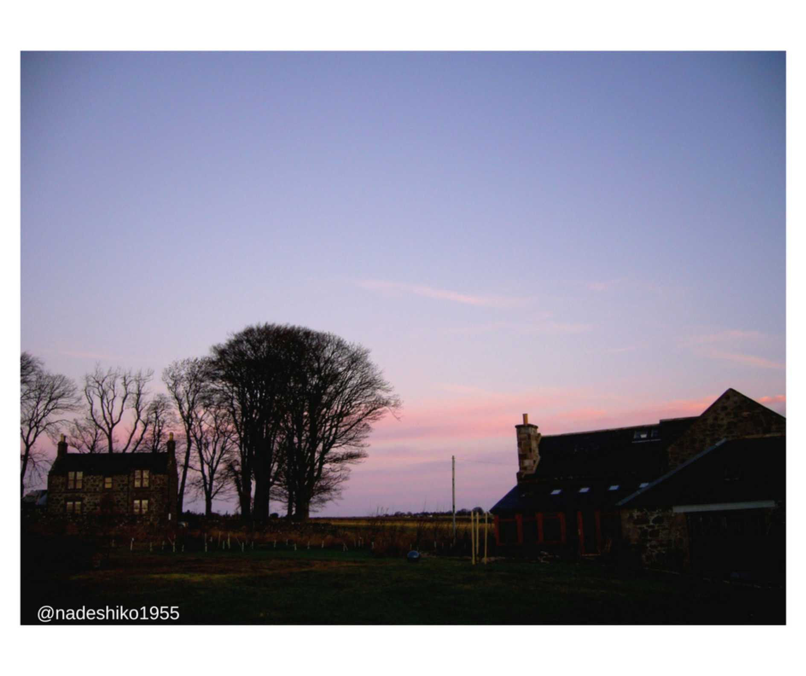
To be Romantic means to live in a moment
when your life feels light with the colour of daybreak,
and you feel that your life is coming together again.
To be Romantic means to smile
instead of crying
when you feel you want to cry.
To be Romantic means to see unexpected beauty
in just one detail of your life
and then to see this beauty everywhere.
Seiko Tanabe
ロマンチックというのは、
人生が一瞬、あけぼの色に、仄明るんでくること。
それによって気を取り直せるかもしれないこと。
ロマンチックというのは、
人間が、泣きたいときに、泣くかわりに微笑すること。
ロマンチックというのは、
人生のディテールで思いがけない美しさを発見して、
そのつもりであちこち見ると、どこにもここにもあった、
とびっくりすること 。 "
田辺聖子
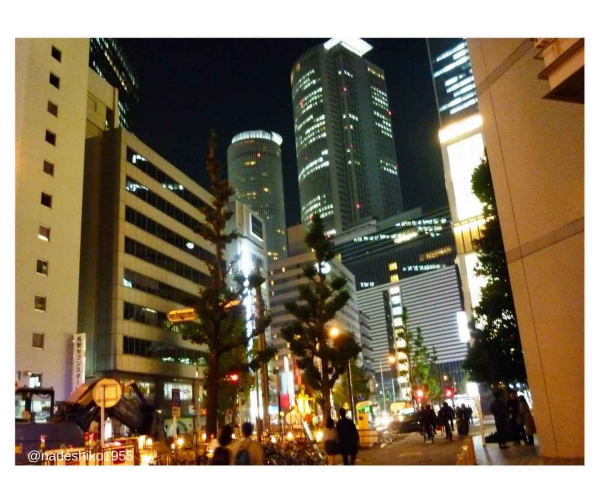
The world today is hungry.
Not only for bread
But hungry for love;
Hungry to be wanted,
Hungry to be loved...
Mother Teresa
今の世界は飢えている。
パンに飢えてるだけでなく
愛に飢えている。
求められることに飢えている。
愛されることに飢えている。
マザー・テレサ
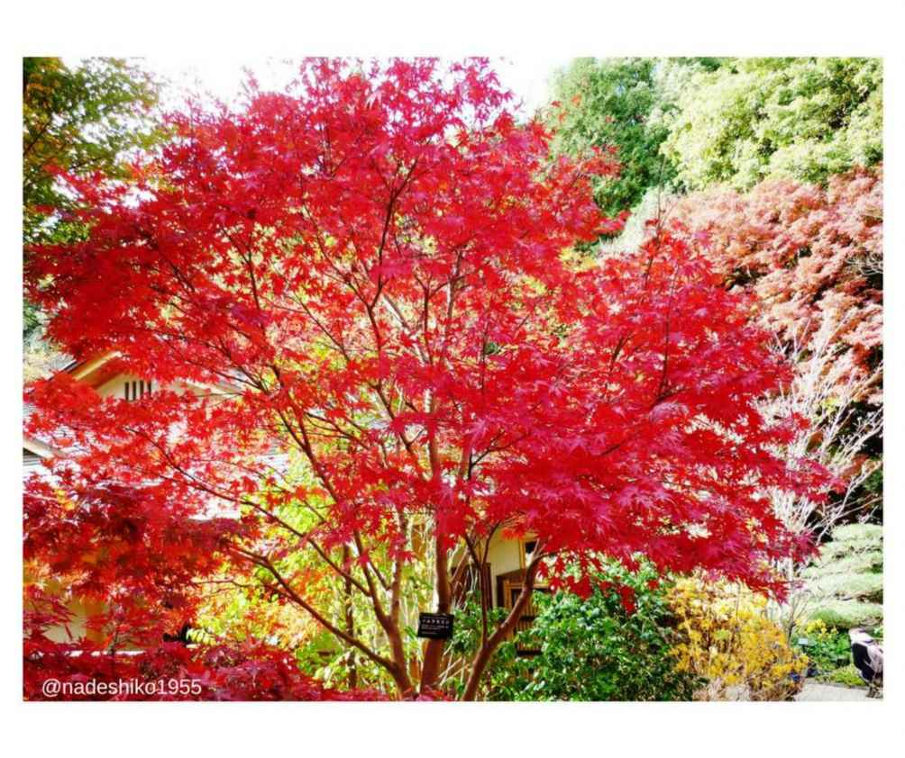
Congratulations!
You lost me.
Unknown
おめでとう！
あなたは私を失ったわ。
詠み人知らず
Poems are ways to say "I love you"
without saying "I love you."
Unknown
詩は「愛してる」という言葉を使わずに
「愛してる」と言う方法だ。
詠み人知らず
Love will find a way.
Unknown
愛は必ず道を見つけるだろう。
詠み人知らず
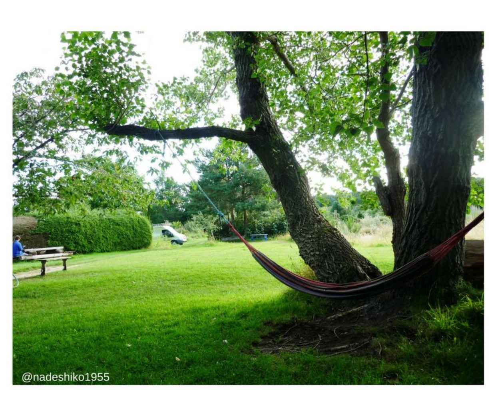
It is better to have loved and lost,
than never to have loved at all."
Alfred Lord Tennyson
愛してそして失う方が
全く愛さなかったよりもいい。
アルフレッド・ロード・テニソン
If you light a lamp for someone else,
it will also brighten your path.
Gautama Buddha
もしあなたが誰かのためにランプをともすなら
それはあなたの道をも照らすだろう。
釈迦
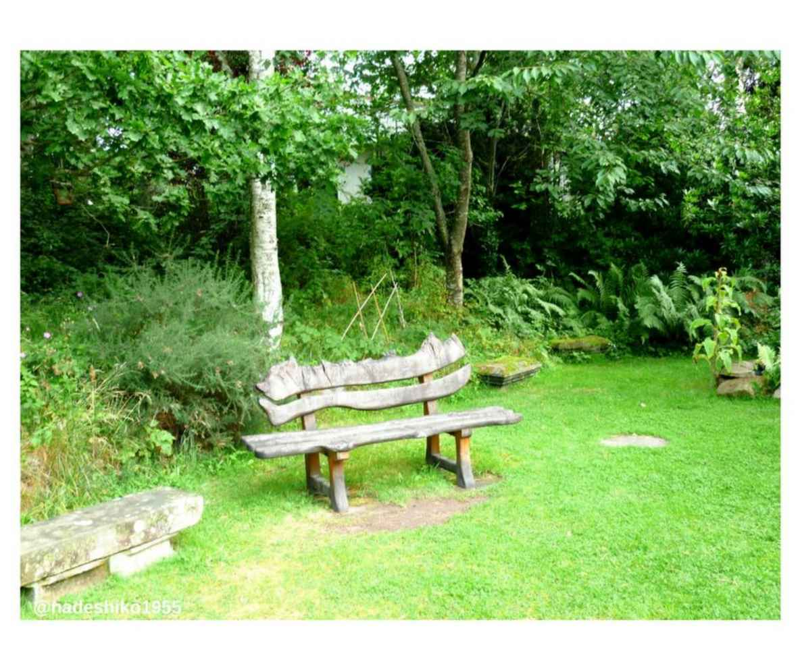
I miss you a little since you've been gone
A few little memories keep hangin' on
I miss you a little, I guess you could say
A little too much, a little too often
A little more every day
John Michael Montgomery
あなたが行ってしまってから
あなたのことが少し恋しい。
ちょっとした記憶が私を引き戻す。
あなたのことが少しだけ恋しい。
多分あなたに言わせれば
少しだけたくさんすぎて
少しだけ頻繁すぎて
毎日少しだけもっと恋しい。
ジョン・マイケル・モントゴメリー
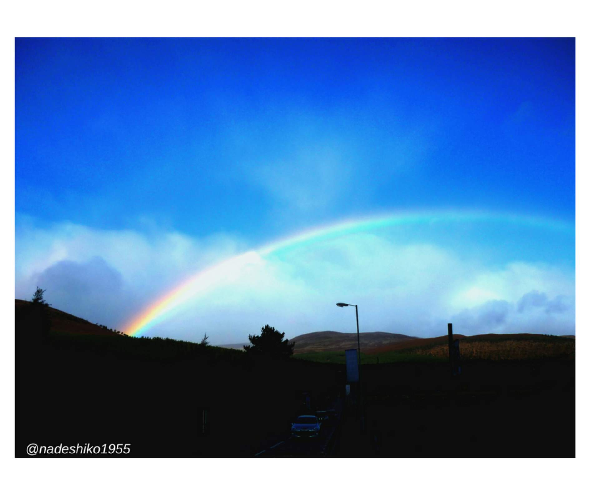
Love isn't something you find.
Love is something that finds you.
Loretta Young
愛とはあなたが見つけるものではない。
愛があなたを見つけるのである。
ロレッタ・ヤング
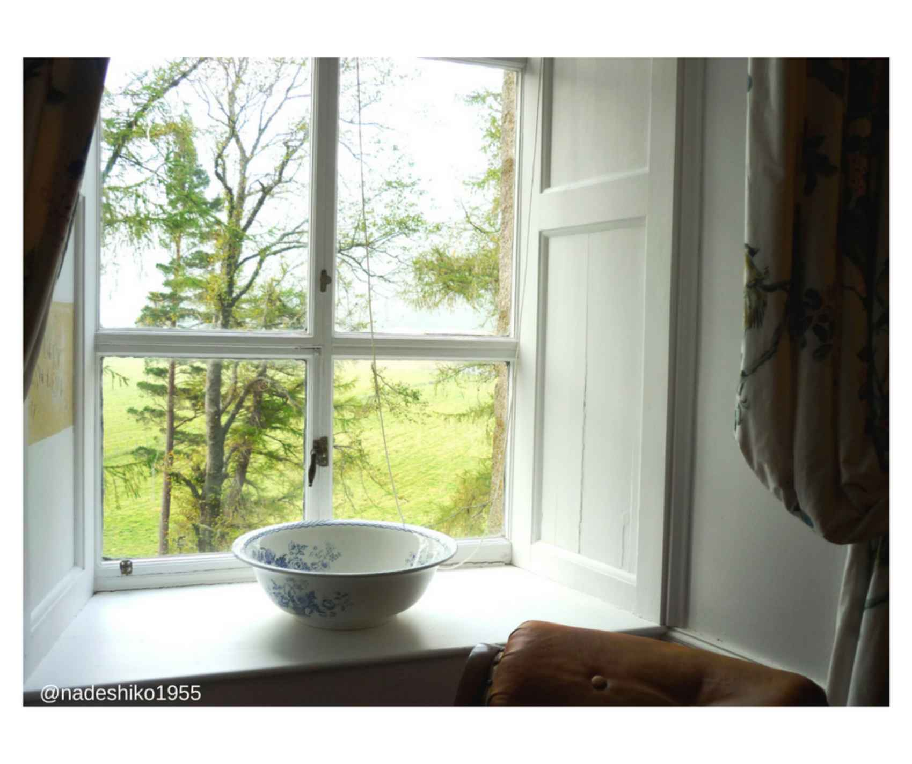
Sometimes the only thing you could do for people
was to be there.
Terry Pratche
ときにはあなたが人々のためにできる唯一のことは
ただそこにいることだったりする。
テリー・プラチェット
To love is not to look at one another:
it is to look, together,
in the same direction.
Antoine De Saint-Exupery
愛するということはお互いに見つめ合うことではなくて
同じ方向を一緒に見ることである。
アントワーヌ・ド・サン＝テグジュペリ
Cluster amaryllis
I really want you.
Anonymous
彼岸花
あなたがほしい
どうしても。
詠み人知らず
I just found why I couldn't forget you so long.
I didn't want to forget you.
I didn't want to lose my memory with you.
Because that was one of the most beautiful things in my life.
Motoe Yamamoto
どうしてあんなに長くあなたのことを忘れられなかったか
やっとわかった。
私はあなたを忘れたくなかったのだ。
あなたと一緒に過ごした記憶をなくしたくなかった。
なぜならそれが私の人生で一番美しいものの一つだったから。
山本元恵
Keep love in your heart.
A life without it is like a sunless garden
when the flowers are dead.
Oscar Wilde
あなたの心に愛を持ちつづけなさい。
愛のない人生は太陽が照らない
花々が枯れてしまった庭のようだ。
オスカー・ワイルド
If you love someone, set them free.
If they come back they're yours;
if they don't they never were.
Richard Bach
もしあなたが誰かを愛したら
彼らを自由にしてあげなさい。
もし彼らが帰ってきたら彼らはあなたのものです。
もし帰ってこなかったら彼らは最初からあなたのものではなかったのです。
リチャード・バック
It is not time or opportunity that is to determine intimacy;
it is disposition alone.
Seven years would be insufficient
to make some people acquainted with each other,
and seven days are more than enough for others.
― Jane Austen, Sense and Sensibility
親密さを決めるのは時間や機会ではありません。
それは気質です。
7 年間はある人々にとってお互いに知り合うために
十分ではないでしょうし、
7 日間が他の人々にとって十分であることもあるのです。
ジェーン・オースティン 「高慢と偏見」
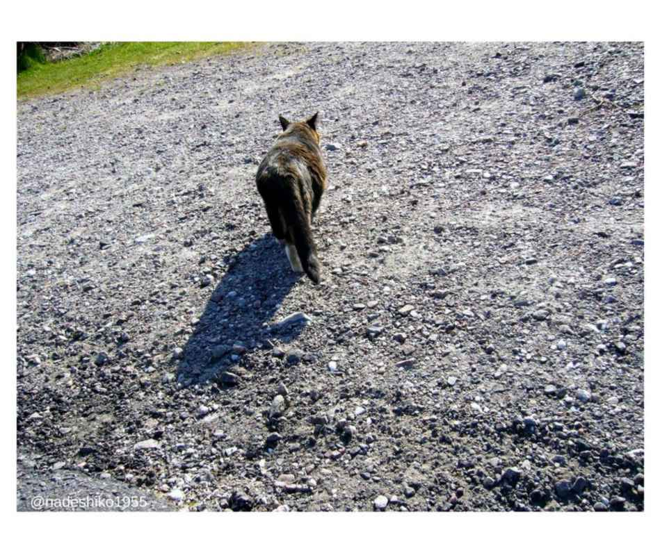
I really don't know what "I love you" means.
I think it means "Don't leave me here alone.
Neil Gaiman
私は「愛してる」の意味が本当にわからない。
それは「ここに私を一人で残していかないで」と言う意味だと思う。
ニール・ゲイマン
I've really come to realize
you have to love yourself
before you can expect someone else to.
Leah Remini
私はわかってきた。
あなたは自分を愛さなくてはいけないのだ。
他の人にそれを期待する前に。
リア・レミに
If you listen to the wind very carefully,
you'll be able to hear me whisper my love for you."
― Andrew Davidson
もしあなたが注意深く風の音を聞くなら
あなたへの愛をささやく私の声が聞こえるだろう。
アンドリュー・デヴィットソン
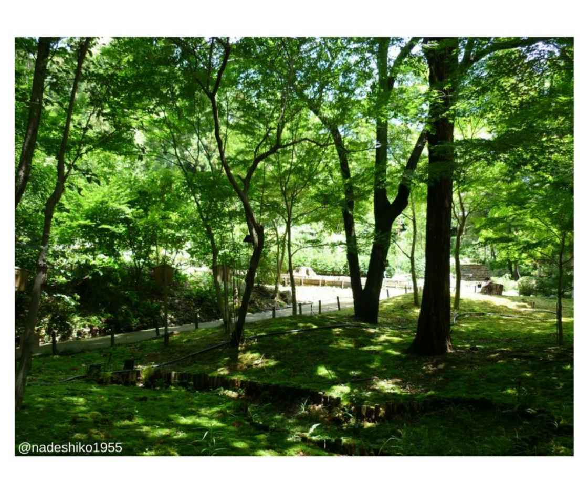
There is a place
You can touch a woman
That will drive her crazy.
Her heart.
Milk Money
そこに触れると
女性を夢中にさせる場所がある。
彼女の心よ。
ミルク・マネー
Sometimes you miss the memories,
not the person
Unknown
時にあなたは記憶を恋しく思う
その人でなくて。
詠み人知らず

Loved you yesterday,
love you still,
always have,
always will."
---Anonymous
昨日あなたを愛した。
まだ愛してる。
いつも愛してる。
これからもずっと愛する。
詠み人知らず
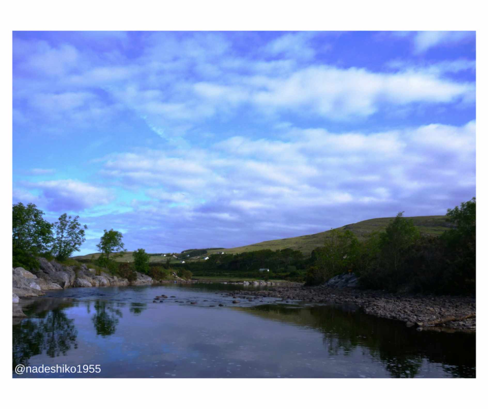
"To love oneself is
the beginning of a life-long romance."
Oscar Wilde
自分を愛することは
生涯続くロマンスの始まりだ。
オスカー・ワイルド
Now I was once a fool it's true
I played the game by all the rules
But now my world's a deeper blue
I'm sadder but I'm wiser too
I swore I'd never love again
I swore my heart would never mend
Said love wasn't worth the pain
But then I hear it call my name
The trouble with love is
私もかつてバカだった、その通りよ。
いろんなゲームをすべてやった。
でも今は私の世界はもっと暗い。
もっと悲しいけど、でももっと賢くなった。
二度と恋なんてしないと誓うわ
私の心は二度と治らない。
恋なんて痛みの価値がない。
でもそのとき私の名前が呼ばれるのが聞こえるの。
恋にまつわるトラブル
We only part
to meet again.
John Gay
私たちは
再び会うためだけに
別れる。
ジョン・ゲイ
No matter how many years pass,
how much distance exists between us,
wherever we are in the world --
even if the universe itself tries to keep us separated --
I will always find my way to you.
-- Anon
どんなにたくさんの月日がたっても
どれくらいの距離が私たちの間にあっても
私たちが世界のどこにいようと
たとえ宇宙が私たちを離れさせようとしていても
私は何時もあなたに向かう道を見つけるだろう。
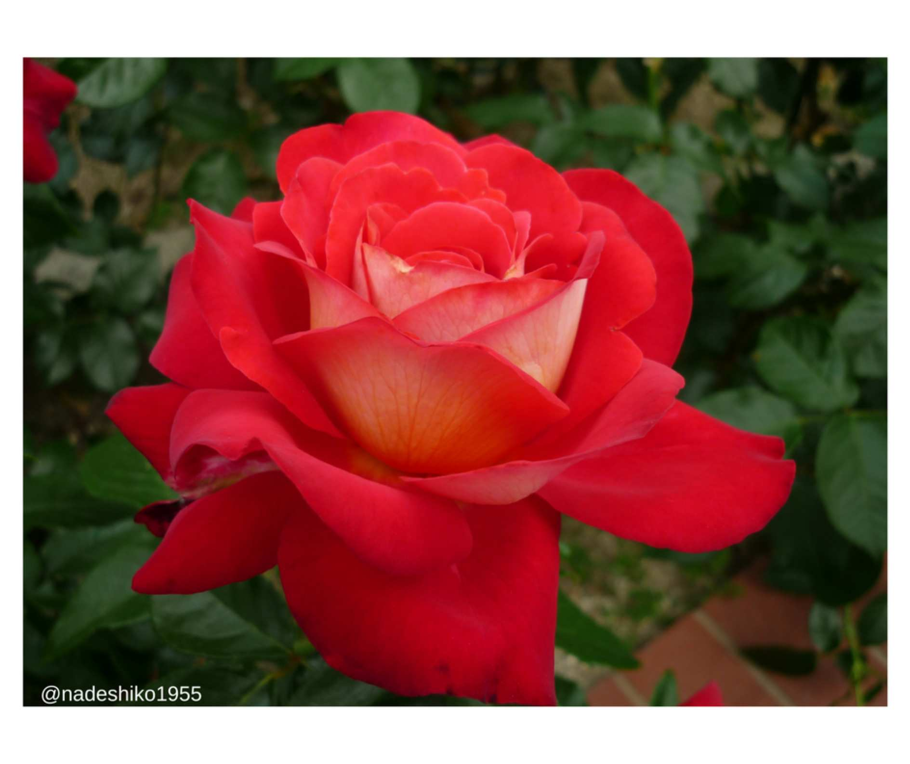
Don't send me flowers when I'm dead.
If you like me,
send them while I'm alive.
Brian Clough
私が死んだときに花を贈らないで。
もしあなたが私のことを好きなら
生きているうちに贈ってください。
ブライアン・クラフ

When I have to cry,
I think about my love life.
When I have to laugh,
I think about my love life.
Glenda Jackson
私が泣かなくてはいけないとき、
自分の恋愛について考える。
私が笑わなくてはいけないとき
自分の恋愛について考える。
グレンダ・ジャクソン
My maid never sweeps under the bed
so I asked her to do so today.
Found a pen, three pairs of shoes
and the man I had lost two years ago."
Sanhita Baruah
私の女中はベッドの下を掃除しない。
だから今日私はそうするよう彼女に頼んだ。
結果見つかったのは
一本のペン と3 足の靴、
そし て2 年前になくした男だった。
サンティア・バルーア
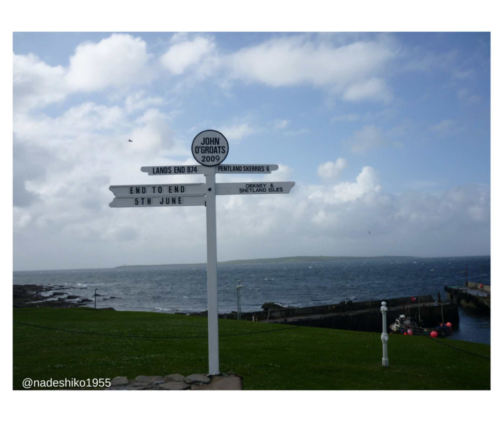
Dear Heart,
fall in love only when you're ready,
not when you're lonely
Anony-mouse.
心よ
あなたが準備ができた時に恋に落ちてください。
あなたが孤独な時でなくて。
匿名希望者
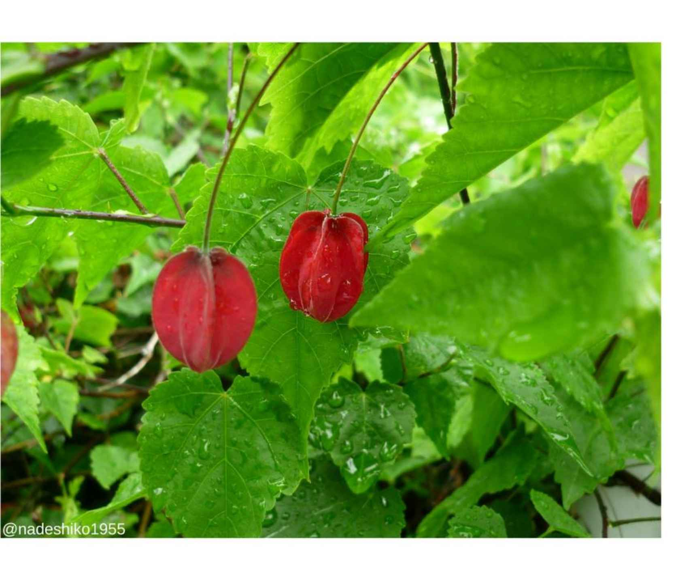
For the first time in his life
he understood why the Bible called sex "knowing".
Everything was different.
Now he knew Dante.
He'd known Dante.
And wonder of wonders,
Dante had known him right back."--
Damon Suede, Hot Head
人生で初めて、
彼はなぜ聖書がセックスすることを「知る」というのか理解した。
全てが違っていた。
今や彼 は Dant e のことを知った。
彼 は Dant e のことを知っていた。
そして驚いたことに
Dant e も彼のことを知っていたのだった。
デーモン・スエード
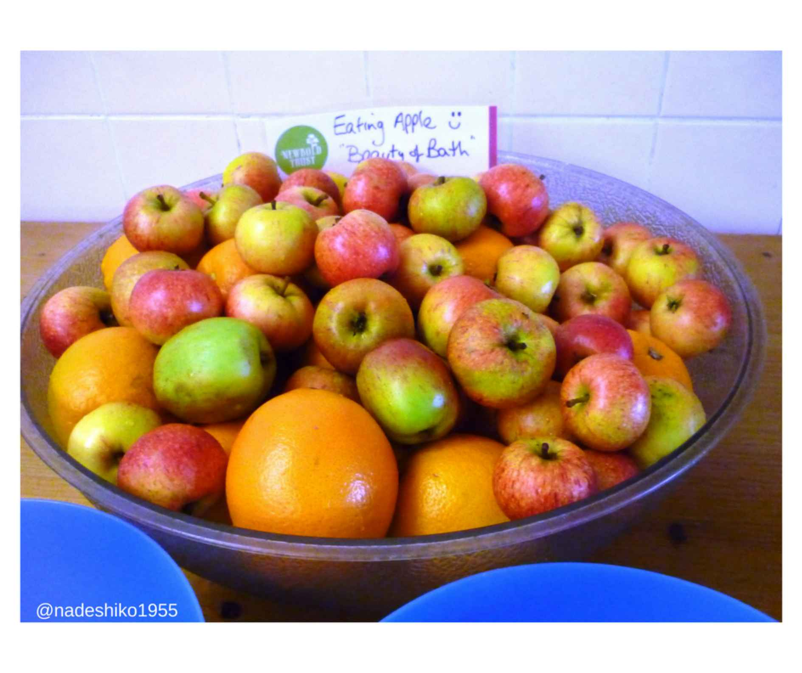
The need for love and intimacy is
a fundamental human need,
as primal as the need for food, water, and air.
Dean Ornish
愛と親密さは
食べ物や水、そして空気のように
人間が根本的に必要としているものである。
ディーン・オーニッシュ
Pleasure of love lasts but a moment.
Pain of love lasts a lifetime.
Bette Davis
恋の喜びは一瞬しか続かない。
でも恋の痛みは生涯続く。
ベティ・デイビス

I don't cry because we've been separated by distance,
and for a matter of years.
Why?
Because for as long as we share the same sky
and breathe the same air,
we're still together."
Donna Lynn Hope
たとえ私たちが距離や年月で隔てられていても、
私は泣いたりしない。
なぜって同じ空の下にいて
同じ空気を吸っている限り
私たちはまだ一緒だからだ。
ドナ・リン・ホープ

Do not worry about avoiding temptation.
As you grow older it will avoid you.
Joey Adams
誘惑を避けることについて心配するな。
年を取るにつれて誘惑の方があなたを避けるだろう。
ジョーイ・アダムズ
A friend is someone
who knows all about you
and still loves you."
― Elbert Hubbard
友だちとはあなたについてすべてを知って
それでもなおかつあなたを愛する人である。
エルバート・ハバード
Being deeply loved by someone gives you strength,
while loving someone deeply gives you courage."
Lao Tzu
誰かに深く愛されることはあなたに力を与える。
そして誰かを深く愛することはあなたに勇気を与える。
老子
The longing for sweets is
really a yearning for love or "sweetness."
Marion Woodman
甘いものへの渇望は
本当は愛や甘美さを求める叫びなのだ。
マリオン・ウッドマン
At the touch of love
everyone becomes a poet.
Plato
愛が触れると
全ての人が詩人になる。
プラトー
I am good, but not an angel.
I do sin, but I am not the devil.
I am just a small girl in a big world
trying to find someone to love.
Marilyn Monroe
私はいい娘なの、でも天使じゃない。
私は罪を犯す、でも悪魔でもない。
私は大きな世界の中にいるただの小さな女の子で
誰か愛する人を探そうとしてるだけ。
マリリン・モンロー

All you need is love.
But a little chocolate now and then doesn't hurt.
Charles Schulz
あなたに必要なものは愛である。
でも時々ちょっとばかりのチョコレートを取るのは
害にならないだろう。
チャールズ・シュルツ
To love is nothing.
To be loved is something.
But to love and be loved,
that's everything."
T. Tolis
愛することは大したことでない。
愛されることはちょっとしたことだ。
でも愛して愛されることは
それはすべてなのだ。
Ｔ．トリス
Love is everywhere,
but you have to be aware of it
to appreciate it fully,
like the air you breathe.
Eileen Caddy "Flight into Freedom and Beyond"
愛はどこにでもあります。
でもそれを完全に正しく評価するには
あなたはまず気づかなければなりません。
あなたが呼吸している空気のように。
アイリーン・キャディ
"I've always thought it was about finding the right person.
But it's about choosing the right person, isn't it?
......Making a real choice and giving your whole heart to it."
"Easier said than done."
Lisa Kleypas "Sugar Daddy"
「私はいつも正しい人を見つけることが大事だと思ってきたわ。
でも本当は正しい人を選ぶことなのよね？
本当の選択をしてあなたの心をすべてそれに注ぎ込むこと。」
「口で言うほどたやすくないのだよ。」
リサ・クレイパス「シュガーダディ」
If your heart is broken,
make art with the pieces.
Shane L. Koyczan
もしあなたのハートが壊れたら
そのかけらを使って芸術を作りなさい。
シェイン・コエチャーン
A kiss is a lovely trick designed
by nature to stop speech
when words become superfluous.
Ingrid Bergman
キスは素敵な魔術です。
言葉がいらなくなった時に、
自然に会話を止めさせてくれるのだから。
イングリッド・バーグマン
Missing you comes in waves.
Tonight I'm drowning.
Unknown
あなたを恋しく思う気持ちは
波のようにやってくる。
今夜、私は溺れそうだ。
詠み人知らず
If you're alone,
I'll be your shadow.
If you want to cry,
I'll be your shoulder.
If you want a hug,
I'll be your pillow.
If you need to be happy,
I'll be your smile...
But anytime you need a friend,
I'll just be me."
- Unknown
もしあなたが一人ぼっちなら
私はあなたの影になる。
もしあなたが泣きたいなら
私はあなたがすがって泣く肩になる
もしあなたがハグがほしいなら
私はあなたの枕になる
もしあなたが幸せでいたいなら
私はあなたの微笑になる
でもどんな時もあなたが友達を必要とするとき
私はただ私になる。
詠み人知らず
My heart never knew loneliness
until you went away.
I'm missing you.
Unknown
私の心は孤独を知らなかった。
あなたが行ってしまうまでは。
あなたが恋しい。
詠み人知らず
You can't force someone to love you.
The best you can do is strive to be someone worthy of loving.
Dipper Pines
誰かにあなたを愛するように強制はできない。
あなたができる最善の方法は
愛するに値する誰かになるよう努力することだ。
ディッパー・パインズ
When you're happy,
I'm happy.
When you're sad,
I'm sad.
When you're lonely,
call me!
Unknown
あなたが幸せな時、私も幸せ。
あなたが悲しいとき、私も悲しい。
あなた孤独な時、私に
電話して！
詠み人知らず
Love is like the wind,
you can't see it
but you can feel it.
Nicolas Sparkes
愛とは風のようなものだ。
あなたはそれを見ることはできない。
でも感じることはできる。
ニコラス・スパークス
I value hope.
Because I have tasted frustration,
I value filfullment.
Because I have been lonely,
I value love .
Leonard Nimoy
絶望を知っているからこそ
私は希望を重んじる
挫折を知っているからこそ
私は充足を重んじる
孤独だったからこそ
私は愛を重んじる
レナード・ニモイ
Cooking is like making love,
you do it well, or you do not do it at all.
Harriet Van Horne
料理はメイクラブのようなものだ。
上手か、全くダメかのどちらかだ。
ハリエット・ヴァン・ホーム
One cannot think well,
love well, sleep well,
if one has not dined well.
Virginia Woolf
ちゃんと食べなきゃ、
考えも、恋も、睡眠もまともに出来ません。
ヴァージニア・ウルフ
A friend is someone
who knows all about you
and still loves you."
― Elbert Hubbard
友だちとはあなたについてすべてを知って
それでもなおかつあなたを愛する人である。
エルバート・ハバード
This is my wish for you:
Comfort on difficult days,
smiles when sadness intrudes,
rainbows to follow the clouds,
laughter to kiss your lips,
sunsets to warm your heart,
hugs when spirits sag,
beauty for your eyes to see,
friendships to brighten your being,
faith so that you can believe,
confidence for when you doubt,
courage to know yourself,
patience to accept the truth,
Love to complete your life."
Ralph Waldo Emerson
あなたのために望むもの
困難な日々における慰め
悲しみが来た時のほほえみ
雲に続く虹
あなたの唇にキスする笑い
あなたの心を暖める夕焼け
あなたの魂が沈んでいるときのハグ
あなたの眼が見るための美しさ
あなたの存在を輝かせる友情
あなたが信じることができるだけの信念
あなたが疑いを持った時のための自信
あなたが自分を知る勇気
あなたが真実を受け入れるための忍耐
あなたの人生を完成させる愛
ラルフ・ウオルド・エマーソン
Happiness is a drug.
And I want to be your dealer.
Unknown
幸せは麻薬である。
そして私はあなたに幸せを売る売人になりたい。
詠み人知らず
Happiness
Be happy,
and a reason will come along.
- Robert Brault
まずは幸せになりなさい。
その理由は後から来るでしょう。
ロバート・ブラウト
Don't waste a minute not being happy.
If one window closes,
run to the next window- or break down a door.
Brooke Shields
幸せでない時間
で1
分たりとも無駄にしないで。
もしひとつの窓が閉じたのなら、
次の窓に走りなさい。
そうでなければドアを壊しなさい。
ブルック・シールズ
We all have obligation to be happy.
Hector and the Search for Happiness
私たちはみんな幸せになる義務がある。
ヘクターと幸せへの探求
I am an optimist.
I know that isn't a common trait to have these days,
but I just can't help myself.
Whenever things get stressful - and let's face it,
in today's world it's too easy for them to get that way -
I make it a point to remember what's really important in my life.
What it is that makes me happy.
For me, and I 'll bet for you, too,
being happy is being surrounded by family and friends.
It's the simple pleasures for life,
like a good book, a sun-filled afternoon,
or a beautiful landscape that are truly valuable.
That's what I think about when I 'm faced with adversity.
Those are the things that make me happy.
Romero Britto "HAPPY"
私は楽観主義者である。
これは現代では珍しい特性であるということは知っている。
でも私は自分をただ止められないのだ。
ものごとがストレスフルになった時、
さあ現実に直面しようというのがいまのやり方だけど、
私は自分の人生で何が一番大切なのかを思いだすようにしている。
何が私を幸せにしてくれるのか？
わたしにとっては、あなたもそうだと思うけど、
幸せと言うのは家族や友人たちに囲まれていることだ。
それは人生のシンプルな喜びなのだ。
良い本や、光に満ちた午後や、
美しい景色などは本当に価値があるのだ。
それが私が困難に直面したとき考えることだ。
それらが私を幸せにしてくれるものなのだ。
ロメロ・ブリット "ハッピー"
Enjoy the little things,
for one day you may look back
and realize they were the big things.
Robert Brault
小さなことを楽しみなさい。
なぜならいつかあなたは振り返って
それは大きなことだったと悟るだろうから。
ロバート・ブロー
Happiness is eating warm noodles
on a cold winter day.
Motoe Yamamoto
幸せとは
風が強くて寒い冬の日に
あったかいうどんを食べること。
山本元恵
I don't have to chase extraordinary moments to find happiness
it's right in front of me
if I'm paying attention and practicing gratitude.
Brene Brown
私は幸せを見つけるために素晴らしい瞬間を追い求める必要はない。
それは私の目の前にある。
もし私が注意を払って感謝を練習するなら。
ブレネ・ブラウン
"Happiness is not a station you arrive at,
but a manner of traveling."
-- Margaret B. Runbeck
幸せとはあなたが到着する駅のことではない。
旅するマナーのことだ。
マーガレット ・B ランベック
I do believe that if you haven't learnt about sadness,
you cannot appreciate happiness.
Nana Mouskouri
私は信じてる。
もしあなたが悲しみについて学ばなかったら
あなたは幸せを感謝することはできない。
ナナ・ムスクーリ
Happiness is like a kiss.
You must share it to enjoy it.
Bernard Meltzer
幸せとはキスのようなものである。
それを楽しむには分かちあわなくてはいけない。
バーナード・メルツアー

Happiness is a simple everyday miracle,
like water, and we are not aware of it.
Nikos Kazantzakis
幸せとはシンプルな毎日の奇跡である。
たとえていえば水のような。
私たちはただそれに気づいていないだけなのだ。
ニコス・カザンザキス
If you think sunshine brings you happiness,
then you haven't danced in the rain.
- unknown
もしあなたが太陽が幸せをもたらしてくれると思っているなら、
あなたは雨の中で踊ったことがないはずだ。
詠み人知らず
The most important thing is to enjoy your life---
to be happy---
it's all that matters."
― Audrey Hepburn
幸せになるためにいちばん大切なことは
人生を楽しむことだ。
それだけが大事なことなのだ。
オードリー・ヘップバーン
The soul that sees beauty
may sometimes walk alone.
Johann Wolfgang von Goethe
美しさがわかる魂は
時に一人で歩く。
ヨハン・ウオルフガング・ヴァン・ゲーテ
Think of all the beauty still left around you and be happy.
Anne Frank
まだあなたの周りに残されている
美しさのことを思って
幸せでいなさい。
アンネ・フランク
If you have crazy friends
you have everything you'll ever need.
Anonymous -
もしあなたにクレージーな友達がいるなら
あなたは必要なものすべてを持っていることになる。
詠み人知らず
It is good to be alive.
生きているっていいことだ。
They say a person needs just three things
to be truly happy in this world:
someone to love,
something to do,
and something to hope for."
Tom Bodett
人間が本当に幸福になるには
3つのことが必要だと言われている。
愛する誰か
するべき何か
そして望むべき何か。
トム・ボデット
You don't always have to know who you are.
You don't have to have the big picture,
or know where you're heading.
Sometimes it's enough just to know what you're going to do next.'
Sophie Kinsella "Undomestic Goddess"
あなたはいつも自分が誰であるか知っている必要はない。
あなたは大きな計画を立てる必要もない。
どこへ向かっているか知る必要もない。
時には次に何をするかを知っているだけで十分なのだ。
ソフィー・キンセラ 「家事場の女神さま」
I'd rather be miserable loving you
than happy with anyone else.
Angela Morrison, Sing Me to Sleep
他の誰かと一緒に幸せであるより
私はあなたを愛して惨めでいるほうがいい。
アンジェラ・モリソン
Rest and be thankful.
William Wordsworth
休みなさい
そして感謝しなさい。
ウィリアム・ワーズワース
Relax!
Life is beautiful!
David L. Wolper
リラックスしよう!
人生は美しい!
デビッド・L・ウオルパー
Count your blessings.
Unknown
あなたの恵みを数えなさい。
詠み人知らず
The great pleasure in life is
doing what people say you cannot do.
Walter Bagehot
人生における最高の喜びは
みんながあなたにはできないということを
することだ。
ウオルター・バグホット
I think I deserve something beautiful.
― Elizabeth Gilbert, Eat, Pray, Love.
私は美しいものに値すると思う。
エリザベス・ギルバート「食べて、祈って、恋をして」
The best way to pay for a lovely moment is to enjoy it.
Richard Bach
素晴らしい瞬間に報いる最高の方法は
それを楽しむことだ。
リチャード・バック
That is one good thing about this world...there are always sure to be more springs.
― L.M. Montgomery, Anne of Avonlea
この世界についてひとついいことがある。
いつも必ず春はやってくるのだ。
L.M. モンゴメリ 「アンの青春」
When I was in grade school,
they told me to write down what I wanted to be when I grew up.
I wrote down happy.
They told me I didn't understand the assignment,
I told them they didn't understand life
- John Lennon
私が小学校の時、
将来何になりたいかを書くように言われた。
私は幸せになりたいと書いた。
彼らは私が課題を理解してないと言った。
私は彼らが人生を理解してないと言った。
ジョン・レノン
It's a funny thing about life;
if you refuse to accept anything but
the best, you very often get it.
Somerset Maugham
人生とはおかしなものだ。
最高のものしか受けいれずにいれば
最高のものを手に入れることが多い。
サマセット・モーム
I like food.
I like eating.
And I don't want to deprive myself of good food.
Sarah Michelle Gellar
私は食べ物が好きだ。
私は食べることが好きだ。
そして私は自分からよい食べ物を奪いたくない。
サラ・ミシェル・ゲラー
They say a person nedds just three things
to be truly happy in this world:
someone to love,
something to do,
and something to hope for."
― Tom Bodett
人間が本当に幸福になるには
3つのことが必要だと言われている。
愛する誰か
するべき何か
そして望むべき何か。
トム・ボデット
Most people have never learned
that one of the main aims in life is to enjoy it.
Samuel Butler
ほとんどの人は知らない。
人生の主目的のひとつは
楽しむことであることを。
サミュエル・バトラー
Happiness is like a cat,
If you try to coax it or call it,
it will avoid you;
it will never come.
But if you pay not attention to it
and go about your business,
you'll find it rubbing against your legs
and jumping into your lap.
William Bennett
幸せとは猫のようなものだ。
もしあなたがあやしたり呼んだりすれば
あなたを避けて
決してやってこない。
でももしあなたがそれに注意を払うのをやめて
自分のことをやっていれば
それはあなたの足に身をこすりつけて
膝に飛び乗るだろう。
ウィリアム・ベネット
The best way to pay for a lovely moment is to enjoy it.
Richard Bach
素晴らしい瞬間に報いる最高の方法は
それを楽しむことだ。
リチャード・バック

No winter lasts forever;
no spring skips its turn.
Hal Borland
永遠に続く冬はない。
めぐってこない春もない。
ハル・ボーランド
Happiness is like a butterfly,
the more you chase it,
the more it will elude you,
But if you turn your
attention to other things,
it comes and softly sits on
your shoulder.
Nathanial Hawthorne
幸せは蝶のようなものだ
あなたが追い求めれば追い求めるほど
それは巧みに身をかわす
でももしあなたが関心を
他のものに向ければ
それはやってきて優しく
あなたの肩にとまるだろう
ナサナエル・ホーソン
Challenge
I'm not a stranger to the dark
Hide away, they say
'Cause we don't want your broken parts
I've learned to be ashamed of all my scars
Run away, they say
No one will love you as you are
But I won't let them break me down to dust
I know that there's a place for us
For we are glorious
When the sharpest words wanna cut me down
I'm gonna send a flood, gonna drown them out
I am brave, I am bruised
I am who I'm meant to be, this is me
Look out 'cause here I come
And I'm marching on to the beat I drum
I'm not scared to be seen
I make no apologies, this is me
私は闇がお似合いなのね
隠れるの だって彼らが言うの
『壊れかけの部品なんていらないって』
そこで私は自分の傷を恥じることを知ったの
逃げるの 彼らが言うの
『そのままのあなたを愛してくれる人なんていない』って
でももう彼らの言葉に振り回されたりしないわ
知ってるわ、私たちのための場所があるって
私たちの栄光のためのね
鋭い言葉が私を切ろうとしても
洪水を起こして、彼らを溺れさせてやるわ
私は勇敢なの 私が痣なのよ
私が私のあるべき身なの これが私よ
見てよ 私が通るわ
私は私の叩くドラムの音に合わせて行進するわ
もうあの傷を見られることは怖くないわ
謝りもしないわ これが私だもの
In the midst of any stressful situation,
say or think a series of statements such as,
Stay calm. . . everything's okay. . .
you've handled worse before. . .
relax and take a deep breath. . .
take it step by step and don't rush. . .
I can get help if I need it.
Amy E. Dean
どんなストレスフルな状況にあっても
このような言葉を言ったり考えたりしよう。
心を落ち着けて
全てはうまくいくから。
あなたはもっと悪いことにも対応してきたじゃない。
リラックスして深呼吸しよう。
一歩ずつ進んで
そして急がないで。
私は必要な時はこれで助けを得られる。
エイミー・Ｅ・ディーン
Don't worry about losing.
If it is right, it happens -
The Main thing is not to hurry.
Nothing good gets away.
John Steinbeck
失うことを恐れてはいけない。
もしそれが正しいことなら、それは起こる。
大切なことは急がないことだ。
良いことは決してなくなったりしない。
ジョン・スタインベック
We have to embrace obstacles
to reach the next stage of joy.
Goldie Hawn
私たちは障害を抱きしめなくてはいけない。
次の喜びの段階に到達するために。
ゴールディ・ホーン
When I say I'm going to forget you
I know it's impossible to forget someone I once knew.
What I want is to erase you from my thoughts
and purge you from my memories.
I'm saying it's what I wish for,
not what is or could ever be.
― Donna Lynn Hope
私があなたを忘れるつもりだと言うとき、
かつて知っていた誰かを忘れることなんて
不可能だってことをわかっている。
私がしたいのはあなたを思考から消すこと
そして記憶から取り除くこと。
それが私が望んでいることだけど
それができたためしがない。
ドナ・リン・ホープ
To forgive is to set a prisoner free
and discover that the prisoner was you.
Lewis B. Smedes
許すことは囚人を自由にすることであり、
その囚人とは自分であったことを発見することである。
ルイス・B・スメズ
The only way to survive is
to have a sense of humour.
Bob Newhart
生き延びるための唯一の方法は
ユーモアのセンスを持つことである。
ボブ・ニューハート
Anywhere you go,
sad is sad,
and the lonley ones are lonely.
Seagull diner
どこに行こうとも
悲しい人は悲しいし、
淋しい人は淋しいんですね。
かもめ食堂
Let go.
Why do you cling to pain?
There is nothing you can do about the wrongs of yesterday.
It is not yours to judge.
Why hold on to the very thing which keeps you from hope and love?
Leo Buscaglia
手放しなさい。
どうして痛みにしがみつくのですか？
昨日の悪に関してあなたにできることは何もないのです。
裁くのはあなたの役目ではない。
どうしてあなたを希望や愛から遠ざけるものを握りしめているのですか？
レオ・バスカリア
But, eventually,
everything must change,
everyone will change.
Seagull diner
でもずっと同じではいられないものですよね。
ひとは皆変わっていくものですから。
かもめ食堂
Life is, at times, tough...
And all we need to do is to prove that we are tougher than it...
― Sanhita Baruah
人生はときに厳しいものだ。
そして私たちがするべきことは
私たちはそれよりずっと強いということを証明することだ。
サンティア・バルア
But one of the big lessons I have learned from my journey is
you can't please everyone,
so don't try.
Chris Colfer
私が自分の人生の旅路で学んだ一番大きなレッスンの一つは
すべての人を喜ばせることはできないということだ。
だからそうしようとしてはいけない。
クリス・コルファー
"Get over yourself!" she said,
"I'm tired of listening to you complain about this place!
The universe cannot give you anything new
until you're totally in love with the space that you're in
and you are grateful for all of it
and you don't want anything else."
Lisa・Natoli 40days program
「いい加減にしなさい。」彼女は言った。
「あなたがこの場所について愚痴るのを聞くのはもううんざりだわ。
宇宙はあなたがいるこの場所と完全に恋に落ちて
感謝して他に何もいらなくなるまで
何も新しいものを与えることができないのよ。」
リサ・ナトリ 40days program
One day at a time sweet Jesus
That's all I'm askin' of you
Just give me the strength
To do every day what I have to do
Yesterday's gone sweet Jesus
And tomorrow may never be mine
Lord, help me today, show me the way
One day at a time
Marijohn Wilkin
いちどに一日ずつ、主よ
それが私があなたにお願いするすべてです。
私に力をください。
毎日しなくてはいけないことをするための。
昨日はもう行ってしまって
そして明日は私のものでないかもしれない。
だから、今日助けてください、主よ。
道を示してください。
いちどに一日ずつ。
You have been criticizing yourself for years,
and it hasn't worked.
Try approving of yourself and see what happens."
-- Louise L. Hay
あなたはずっと自分自身を何年も批判してきた。
でもなにも変わらなかった。
自分を認めてみよう。
そして何が起こるか見てみよう。
ルイーズ・ヘイ
God will never give you anything
you can't handle,
so don't stress.
Kelly Clarkson
神はあなたが対処できないようなことは
あなたに与えない。
だから緊張しないで。
ケリー・クラークソン
When people hurt you over and over,
think of them like sand paper;
They may scratch and hurt you a bit,
but in the end,
you end up polished and they end up useless.
Chris Colfer
人々があなたを何度も何度も傷つけるとき、
彼らを紙やすりだと考えなさい。
彼らはあなたをひっかいて少し傷つけるかもしれないが
結局最後には
あなたは磨かれて、そして彼らは用無しになる。
クリス・コルファー
It's OKAY to be scared.
Being scared means you're about to do something
really, really brave."
Mandy Hale,
恐れてもいいのです。
恐れているということは、
あなたがとてもとても勇敢な何かを
しようとしているということなのだから。
マンディ・ヘール
My dear brother, you are your own worst enermy.
If you can learn to stop expecting impossible perfection,
in your self and otheres,
you may find the happiness that has always eluded you.
Lisa Kleypas "Love in the Afternoon"
愛する弟よ、お前の最大の敵はお前自身だ。
完璧なものなどこの世にない。
だから他人にも自分にも完ぺきを求めるのはやめろ。
そうすればお前がいつも見過ごしてきた幸福が
目の前に現れるはずだから。
リサ・クレイパス 「優しい午後に口づけて」
The past is over and done.
We cannot change that now.
Yet we can change our thoughts about the past.
How foolish for us to
PUNISH OURSELVES
in the present moment
becaue someone hurt us in the long ago past.
Louise L. Hay
過去はもう過ぎてしまったことです。
私たちは今過去を変えることはできません。
しかし過去に関する考えを変えることはできます。
ずっと昔に誰かが私たちにしたことについて
今自分自身を罰するなんて
なんて愚かなことでしょうか。
ルイーズ L・ ヘイ
MONEY IS THE EASIEST THING TO DEMONSTRATE!
How do you react to this statement?
Do you believe it? Are you angry?
Are you indifferent?
Are you ready to throw this book across the room?
If you have any of these reactions, GOOD!
I have touched something deep inside you,
that very point ot reisstance to truth.
This is the area to work on.
It is time to open yourself to the potential
of receiving the flow of money and all good.
Louise L. Hay "You can heal your llife"
お金は一番簡単に実現できるものである。
これに対してあなたはどう反応しますか？
怒りを感じますか？無関心ですか？
もうすこしでこの本を部屋の向こうに投げそうになってる？
もしあなたがこれらのどれかの反応をするなら、上等です！
私はあなたの中の深いところにある、
真実に抵抗する何かに触れたのです。
これは取り組むべき分野なのです。
いまこそあなたがお金とすべてのよきことの流れに
オープンになるときなのです。
ルイーズ・H. ヘイ
I have spent all my years in believing you
But I just can't get no relief, Lord!
Somebody, somebody
Can anybody find me somebody to love?
Queen "Somebody to love"
私はあなたを信じることに生涯を費やした。
でも心の平安は得られない。神よ！
だれか、だれか、
だれか、私に愛する人を見つけてくれない
クイーン「サムボディトウラブ」
Low self esteem is like
driving through life
with your hand-brake on.
Maxwell Maltz
自己評価が低いことは
人生を通してハンドブレーキをかけたまま
運転するようなものである。
マックスクウェル・モルツ

I'll keep going till my face falls off.
Barbara Cartland
私は倒れるまで進み続ける。
バーバラ・カートランド
Pray, and let God worry.
Martin Luther
祈りなさい。
そして心配は神に任せなさい。
マルティン・ルター
Problems are not stop signs,
they are guidelines.
Robert Schuller
問題はやめろというしるしではない。
それは導きなのだ。
ロバート・シュルラ―
Look at the sky.
We are not alone.
The whole universe is friendly to us
and conspires only to give the best
to those who dream and work.
A. P. J. Abdul Kalam
空を見てごらんなさい。
私たちはひとりじゃない。
宇宙全体が私たちに友好的で
夢見て働く人たちに
最善のみをくを与えようとしてくれる。
アブドール・カラーン
When life changes to be harder,
change yourself to be stronger.
What hurts you today
makes you stronger tomorrow.
Edwin Mamerto
人生がより厳しく変わるとき
あなた自身をもっと強く変えなさい。
今日あなたを傷つけるものは
明日あなたをより強くする。
エドウィン・マメルト
You learn more from losing than winning.
You learn how to keep going.
Morgan Wootten
成功より失敗からより多くを学べる。
あなたは進み続けることを学ぶのだ。
モーガン・ウートン
Pain will leave you,
when you let go.
Jeremy Aldana
痛みはあなたを去るだろう。
あなたが手放すときに。
ジェレミー・アルダナ
If you are tired, keep going;
if you are scared, keep going;
if you are hungry; keep going;
if you want to taste freedom, keep going."
- Harriet Tubman
疲れているなら、進み続けなさい。
怖いのなら、進み続けなさい。
空腹ならば、進み続けなさい。
自由を味わいたければ
進み続けなさい。
ハリエット・タブマン
If you're going through hell,
keep going.
Winston Churchill
もしも地獄の真っ只中にいるのなら、
そのまま突き進むがいい
ウィンストン・チャーチル
When I say I'm going to forget you
I know it's impossible to forget someone I once knew.
What I want is to erase you from my thoughts
and purge you from my memories.
I'm saying it's what I wish for,
not what is or could ever be.
― Donna Lynn Hope
私があなたを忘れるつもりだと言うとき、
かつて知っていた誰かを忘れることなんて
不可能だってことをわかっている。
私がしたいのはあなたを思考から消すこと
そして記憶から取り除くこと。
それが私が望んでいることだけど
それができたためしがない。
ドナ・リン・ホープ
Don't be afraid to step out,
have dreams,
have visions,
have hopes
and always, always, always believe in miracles.
Joyce Meyer
恐れてはいけない。
一歩踏み出すことを
夢を持つことを
ヴィジョンを持つことを
望みを持つことを
そして、いつも, いつも, いつも奇跡を信じなさい。
ジョイス・マイヤー

Be brave.
Take risks.
Nothing can substitute experience.
Paulo Coelho
勇敢でありなさい。
リスクを冒しなさい。
経験に勝るものはない。
パウロ・コエーリョ
Taking risks gives me energy.
Jay Chiat
リスクを冒すことは
私にエネルギーをくれる。
ジェイ・チアット
Rather than sitting and worrying,
do something, anything.
Worrying is a waste of time.
Catherine Pulsifer
ただ座って心配しているよりも
なんでもいいから何かをしなさい。
心配は時間の無駄だ。
キャサリン・パルシファー
In the middle of every difficulty lies opportunity.
Albert Einstein
すべての困難のなかに機会がある。
アルバート・アインシュタイン
The economic downturn is
our wake-up call to slow down,
consume less, help each other,
& live more.
Phil Harding
景気が悪化しているのは
私達への警告である。
もっとスローダウンするように
消費を減らすように
もっとお互いに助け合うように
そしてもっと生きるようにと。
フィル・ハーディング
Others
Everything has beauty,
but not everyone sees it.
Confucius
全てのものに美しさがある。
でもすべての人がそれを見るとは限らない。
孔子
Tell me what you eat,
and I will tell you who you are.
Jean Anthelme Brillat-Savarin
あなたが何を食べているかを言ってください。
そうすれば私はあなたが誰であるか教えましょう。
ジャン・アンテルム・ブリア＝サヴァラン
Bells will be ringing
the sad, sad news
Oh what a christmas to have the blues
My babys gone (my babys gone)
I have no friends
To wish me greetings once again
Please come home for christmas
Please come home for christmas
If not for christmas by new years night
Please come home for Christmas
鐘が鳴り響くと
悲しいニュースがよけい悲しくなる
ああ なんて憂鬱なクリスマスなんだろう
あの娘は去ってしまった。
クリスマスの挨拶を
もう一度交わす友達も僕にはいない。
お願いだ。
クリスマスには帰ってきて。
クリスマスには帰ってきて。
もしクリスマスじゃなければ
新年の夜までに。
You don't have to see
something to believe in it.
You don't see God,
do you?
Maggie's Christmas Miracle
なにかを信じるのに
それを見る必要はない。
君は神を見てない、だろ？
マギーのクリスマスの奇跡
Find a place inside where there's joy,
and the joy will burn out the pain.
Joseph Campbell
あなたの心の中の喜びのある場所を見つけなさい。
そうすればその喜びが痛みを燃やしてくれるでしょう。
ジョセフ・キャンベル
The greatest gift of life is friendship,
and I have received it.
Hubert H. Humphrey
人生において一番素晴らしい贈り物は友情である。
そして私はそれを受け取っている。
ヒューバート・H・ハンフリー
I think it's important to find the little things in everyday life
that make you happy.
Paula Cole
私は毎日の生活の中で
あなたを幸せにしてくれる
小さなことを見つけるのが大切だと思う。
ポーラ・コール
I need my time to be lonely.
Jose Mourinho
私は一人になる時間が必要だ。
ジョゼ・モウリーニョ
Not until we are lost
do we begin to understand ourselves.
Henry David Thoreau
道に迷って初めて
私たちは自分自身を理解し始める。
ヘンリー・デビッド・ソロー
Nature always wears the colors of the spirit.
Ralph Waldo Emerson
自然はいつも魂の色をまとっている。
ラルフ・ウオルド・エマーソン
In every walk with nature
one receives far more than he seeks.
John Muir
自然の中で歩くたびに
人は探しているもの以上のものを受け取る。
ジョン・ミューア
Look deep into nature,
and then you will understand everything better.
Albert Einstein
自然のなかを深く見なさい。
そうすればあなたはすべてをもっとよく理解するだろう。
アルバート・アインシュタイン
To be still.
Just look and listen.
No more is needed.
Eckhart Tolle
智恵は静かになる能力とともに来る。
ただ見てそして聞きなさい。
それ以上は何も必要はない。
エクハルト・トール
Wherever you go,
no matter what the weather,
always bring your own sunshine.
Anthony J. D'Angelo
どこへ行こうとも、
天気がどうであろうとも
いつもあなた自身の太陽を持って行きなさい。
アンソニー・J・ダンジェロ
If you look the right way,
you can see that the whole world is a garden."
― Frances Hodgson Burnett, The Secret Garden
もしあなたが正しく見るならば
世界全体が庭であることがわかるだろう。
フランシス・H・バーネット 「秘密の花園」
I think everyone should be told they're beautiful
until they believe it
Unknown
全ての人が
あなたは美しいと言われるべきだと私は思う。
彼らがそれを信じるまで。
詠み人知らず
Because of your smile,
you make life more beautiful.
Thich Nhat Hanh
あなたのほほえみは
世界をより美しくする。
ティム・ナット・ハン
。
The water is your friend.
You don't have to fight with water,
just share the same spirit as the water,
and it will help you move."
―Alexander Popov
水はあなたの友達である。
あなたは水と戦う必要はない。
ただ同じスピリットを分け合うだけでいい。
そうすれば水はあなたが動くのを助けてくれるだろう。
アレクサンダー・ポポフ
The best preparation for tomorrow
is doing your best today.
H. Jackson Brown, Jr.
明日のための最善の準備は
今日ベストを尽くすことである。
H・ジャクソン・ブラウン・ジュニア
Our talents are the gift that God gives to us...
What we make of our talents is our gift back to God
Leo Buscaglia
私達の才能は神からの贈り物である。
その才能を使ってすることは
その贈り物を神に返すことになる。
レオ・バスカリア
Zen masters say you cannot see your reflection in running water,
only in still water."
Elizabeth Gilbert, Eat, Pray, Love
禅の師匠は言う。
あなたは流れる水に自分を映すことはできない。
静かな水だけがそれができる。
エリザベス・ギルバート 「食べて、祈って、恋をして」
One of the most important things you can do on this earth
is to let people know they are not alone."
― Shannon L. Alder
この地上であなたができるいちばん大切なことの一つは
人々に一人ぼっちでないということを知らせることだ。
シャノン・L・オルダー
Sometimes when you lose your way,
you find YOURSELF.
Mandy Hale
道に迷ったとき
時にあなたは
自分自身を発見する。
マンディ・ヘイル
The purpose of your life is joy.
Abraham-Hicks
あなたの人生の目的は
喜びである。
エイブラハム・ヒックス
One thing I've come to learn about myself is
that I have to keep going.
Andrew Mason
私が自分について学んできたことのひとつは
進み続けなければいけないということだ。
アンドリュー・メイソン
When you can't remember why you're hurt,
that's when you're healed.
Jane Fonda
どうして傷ついたのか思いだせないとき
それはあなたが癒されたときである。
ジェーン・フォンダ
Peace begins with a smile.
Mother Teresa
平和は微笑みで始まる。
マザー・テレサ
We are like islands in the sea,
separate on the surface
but connected in the deep.
William James
私達は海に浮かぶ島のようだ。
表面では離れているが
深いところではつながっている。
ウイリアム・ジェームズ
Exhale . . .
and give all worries
to God and the angels.
Doreen Virtue
息を吐いて・・・・
そしてすべての心配を
神と天使たちに任せなさい。
ドリーン・ヴァーチュー
When many voices are speaking at once,
listen to the one most quiet and gentle.
That's the one worth listening to.
Miranda Linda Weisz
たくさんの声が一度に来るとき、
一番静かで優しい声を聞きなさい。
それがあなたが聞くべき声です。
ミランダ・リンダ・ウェイズ
Accept yourself,
love yourself,
and keep moving forward.
Roy Bennett
自分自身を受け入れなさい。
自分自身を愛しなさい。
そして前に進み続けなさい。
ロイ・ベネット
The purpose of your life is joy.
Abraham-Hicks
あなたの人生の目的は
喜びである。
エイブラハム・ヒックス
Whenever I have to choose
between two evils,
I always like to try the one
I haven't tried before.
Mae West
二つの悪のうち一つを選ばなくてはいけないとき、
私はいつもやったことのないほうをすることにしている。
メイ・ウエスト
If your heart is broken,
make art with the pieces.
Shane L. Koyczan
もしあなたのハートが壊れたら
そのかけらを使って芸術を作りなさい。
シェイン・コエチャーン
Sometimes the most productive thing you can do is relax.
Mark Black
時にあなたができるいちばん創造的なことは
リラックスすることだったりする。
マーク・ブラック
Keep your face to the sunshine
and you cannot see a shadow.
Helen Keller
あなたの顔を太陽に向けなさい
そうすれば影を見ることはできない。
ヘレン・ケラー
Break the rules.
Find your freedom.
Live your life.
- Unknown
規則を破りなさい。
あなたの自由を見つけなさい。
あなたの人生を生きなさい。
詠み人知らず
We can't help everyone,
but everyone can help someone.
Ronald Reagan
私達はすべての人を助けることはできない。
でもすべての人が誰かを助けることはできる。
ロナルド・レーガン
Sometimes waiting is the hardest thing of all.
Luanne Rice
待つということはときには
一番難しいのだ。
ルーアン・ライス
The truth is, unless you let go,
unless you forgive yourself,
unless you forgive the situation,
unless you realize that the situation is over,
you cannot move forward."
― Steve Maraboli
本当のところ、
あなたが手放さない限り、
あなたが自分を許さない限り、
あなたが状況を許さない限り、
あなたがその状況が終わったとわからない限り
あなたは先には進めないのだ。
スティーブ・マラボリ
Underneath this tired, middle-aged exterior,
I'm an 11 year old kid.
Henry Selick
この疲れた中年の外見の下では
私は11歳の子供なのだ。
ヘンリー・セリック
Naturte is not a place to visit.
It is home!
Gary Snyder
自然は訪れるところではない。
ホームなのだ。
ゲーリー・シンダー
My weaknesses have always been food and men
--- in that order.
Dolly Parton
私の弱点はいつも食べ物と男たちだった。
この順番でね。
ドリー・パートン
Good girls go to heaven,
bad girls go everywhere.
Mae West
良い娘は天国に行く
悪い娘はどこにでも行く
メイ・ウエスト
Learn to let go.
That is the key to happiness.
Buddha
手放すことを学びなさい。
それが幸せへの鍵だ。
ブッダ
When you want only love
you will see nothing else.
A Course in Milracles
あなたが愛だけを求めるとき
他には何も見ないだろう。
奇跡のコース
Nobody sees a flower - really -
it is so small it takes time -
we haven't time -
and to see takes time,
like to have a friend takes time.
Georgia O'Keeffe
ある意味では、誰も一輪の花をちゃんと見ていない。
花はあまりにも小さいし、
私たちには暇がない。
──見るには、友だちになるのと同じく、時間がかかる。
ジョージア・オキーフ

I shut my eyes in order to see.
Paul Gauguin
見るために私は目を閉じる
ポール・ゴーギャン
Live every day as if it were your last,
because one day it will be.
"The Blue Day Book"
今日が最後の日だと思って
毎日を生きよう
いずれその日はやってくるのだから
ブルーデイ・ブック
It doesn't matter where you are,
you are nowhere compared to where you can go."
--- Bob Proctor
今あなたがどこにいるかは問題ではない。
これから行けるところに比べたら
今はどこでもない。
ボブ・プロクター
May the road rise up to meet you
May the wind always be at your back
May the sun shine upon your face
the rains fall soft upon your fields
and until we meet again
May God hold you in the palm of His Hand anon.
道がつねにあなたの前にありますように
風がいつもあなたの背中を
押してくれますように。
太陽があなたの顔を暖かく照らし、
雨があなたの畑に
やさしく降り注ぎますように
そして私たちがふたたび会う日まで、
神様がその手のひらに
あなたをやさしく包んで
くださいますように。
You are only here for a short visit.
Don't hurry. Don't worry.
And be sure to smell the flowers along the way.
Walter C Hagen
あなたはここに少しの間いるだけだ。
だから急がないで。心配しないで。
そして道で花の香りをかぐことをわすれないで。
ウオルター Ｃ ヘーガン
If you do what you love, it is the best way to relax.
Christian Louboutin
もしあなたがやりたいことをやっていれば、
それがリラックスする最善の方法である。
クリスチャン・ルブタン
Take a step back
and view the world through your eyes,
not someone else's.
Listen to your heart
and decide what you really want.
― Fennel Hudson,
A Meaningful Life - Fennel's Journal - No. 1
一歩下がって
そして世界をあなた自身の目で見なさい。
誰かほかの人の目でなくて。
あなたの心の声を聞きなさい。
そしてあなたが何を本当にしたいのか決めなさい。
フェネル・ハドソン

Sleep is the best meditation.
Dalai Lama
睡眠は最高の瞑想である。
ダライ・ラマ
Every day is a gift from God.
Learn to focus on the Giver
and enjoy the gift!
Joyce Meyer
毎日が神からの贈り物である。
贈り主に焦点を合わせることを学び
贈り物を楽しみなさい。
ジョイス・マイヤー
To love somebody is not just a strong feeling
it is a decision,
it is a judgment,
it is a promise.
Erich Fromm
誰かを愛することはただの強い感情ではない。
それは決断である。
判断である。
約束である。
エーリヒ・フロム
My hope still is to leave the world
a bit better than when I got here.
Jim Henson
私の望みは
来たときよりも
世界を少しだけよくして
去ることだ。
ジム・ヘンセン

If you can't do anything about it then let it go.
Don't be a prisoner to things you can't change.
Tony Gaskins
もしあなたがそれについて何もできないのなら
手放しなさい。
あなたが変えられないことの囚人になってはいけない。
トニー・ガスキンズ
You are the only person on earth
who can use your ability.
- Zig Ziglar
あなたはあなたの能力を使うことのできる
たった一人の人である。
ジグ・ジグラー
Silence isn't empty,
it's full of answers.
Anonymous
沈黙は空虚ではない。
それは答えに満ちている。
詠み人知らず
Absolutely eat dessert first.
The thing that you want to do the most,
do that.
Joss Whedon
絶対にデザートを先に食べなさい。
あなたが一番したいこと、
それをするのです。
ジョス・ウェルドン
Then she spoke again,
"But you don't think I'm silly do you.
That's why you're here in this place
and why all the other people are here too.
You're all here to remember who you really are.
" She paused, looked into the distance, and then said,
"We are all here to remember who we are".
John's story "Darren and Donna's game"
それから彼女はまた話し始めた。
「でもあなたは私のことを愚かだとは思わないわよね？
だってそのためにあなたはこの場所にいるのだから
そしてだからほかの人たちもここにいるのだから。
あなたはここに自分が本当に誰であるかを思いだすために来た。」
彼女は遠くを見つめながら息をついだ。
そして言った。
「私達はみんな自分が誰であるか思い出すためにここにいるのよ。」
ジョンの物語 「ダーレンとドナのゲーム」
Epilogue
I love quotes. I love Scotland.
This page connects these two favorites of mine.
.
This is the sellection from Words for your heart from Jan. 2017~ to July 2018. which readers enjoyed most ,
I'm continueing to post to my facebook page, "Words for your heart" evey day. Please like and share and support my page.
https://www.facebook.com/nadeshiko1955/
Thank you.
Sending you lots of love,
Motoe Yamamoto
あとがき
昔から英語の引用が好きでした。とくに写真と引用の組み合わせというのが
私が愛してやまないものでした。
大好きな二つのものの結びつきを皆さんにお見せできることはこの上ない喜びです。
思ったよりもずっと大変な作業でしたが、やっとベストセレクションをお届け出来てとてもうれしいです。
フェイスブックのWords for your heart は今でも進行中です。
ぜひご覧になってをライクやシェアをお願いいたします。
https://www.facebook.com/nadeshiko1955/
たくさんの愛をこめて。
山本元恵